Articles & interviews
1177 articles issus des magazines : interviews de dirigeants et d'élus, publireportages, dossiers thématiques.
 Interview
Interview« Horlogerie suisse entre turbulences et résilience »
Interview d'Yves Bugmann, président de la Fédération horlogère
 Interview
InterviewEPHJ 2026 – Un salon unique au monde par son positionnement
Interview d'Alexandre Catton, directeur de l'EPHJ
 Publireportage
PublireportageArteCad SA – Excellence dans la fabrication de cadrans
Une référence du cadran horloger installée à Tramelan depuis 1885
 Publireportage
Publireportage2b8 Sàrl – Du micron à la décoration, l'horlogerie dans tous ses états
Le « couteau suisse de l'horlogerie » à Marin-Epagnier
 Publireportage
PublireportageBrasport Group – Du bracelet de montre à la maroquinerie de prestige
Le groupe chaux-de-fonnier fête ses 80 ans
 Publireportage
PublireportageBroquet Décolletage SA – L'art du micro-composant au service de la haute horlogerie
Décolletage de précision à Bévilard
 Publireportage
PublireportageGB Microfab – « Des artisans technologues » : microtechnologies pour une horlogerie d'exception
Micro et nanotechnologies appliquées aux composants horlogers
 Publireportage
PublireportageGilbert Petit-Jean SA : l'expérience au cœur du monde horloger
Trois entreprises horlogères pour une même vision
PublireportageBBHG SA : l'habillage horloger et joaillier maîtrisé de A à Z
Boîtes, fermoirs, bracelets et désormais habillage joaillier
 Publireportage
PublireportageBéguelin Sàrl : de l'outillage de précision aux solutions personnalisées
Huit décennies de mécanique de précision
 Publireportage
PublireportageLes Fils d'Henri Frei SA – Depuis 1924, la bienfacture comme héritage
Composants horlogers de haute précision à Court
 Publireportage
PublireportageLa Cible SA – L'art de transformer la matière première en valeur ajoutée
Tréfilage et profilage de matière pour le décolletage à Pontenet
 Publireportage
PublireportageMuller Machines SA – Au cœur du marché mondial de la machine-outil d'occasion
Plus de 2000 machines en stock à Brügg et le musée Centre Muller
 Publireportage
PublireportageFavre-Steudler SA – Un savoir-faire unique dans la fabrication de ressorts
Ressorts industriels sur mesure à Bienne
 Publireportage
PublireportageOesch GmbH – Spécialiste pour les accessoires métalliques
Éléments du bracelet cuir et accessoires d'écrins de luxe
 Publireportage
PublireportageICAM SA – Renforcer sa position dans le monde de la digitalisation des ateliers de production
ICAM et Productec, deux sociétés sœurs propriété de Cyrille Monnin
PublireportageProductec SA – Le numérique au service de l'optimisation des processus de fabrication
CFAO et programmation CNC à Rossemaison
 Publireportage
PublireportageProtofil Sàrl – Précision et complexité au bout du fil
L'atelier d'électroérosion de la vallée de Joux fête ses 10 ans
 Publireportage
PublireportageRessorts Industriels SA – Des ressorts de haute précision jusque dans les mouvements à complication
RISA à Courgenay
 Publireportage
PublireportageSerge Meister SA – Le partenaire privilégié des décolleteurs
Serrages de haute précision au métal dur à Court
 Publireportage
PublireportageSEBAL SA – Un verre de saphir local et bas-carbone
Production indépendante de verres saphir à Bassecourt
PublireportageTIMSAPH SA – Horlogerie responsable ; le saphir devient vertueux
Production de saphir 100 % suisse à faible impact carbone
 Publireportage
PublireportageSTOCO SA – Spécialiste de l'assemblage horloger
Le pré-assemblage au service des manufactures
 Publireportage
PublireportageTechnoformage SA – Le biodégradable pour emballages et conditionnements
Plateaux de conditionnement en copeaux de bois et résine
PublireportageTechnofinish SA – La robotique comme soutien au polissage
Un cobot pour copier le geste humain
 Publireportage
PublireportageVicro SA – Le savoir-faire de l'artisan au service de l'habillage horloger
Décalque, laque, Superluminova, collage et gravure laser à Porrentruy
 Publireportage
PublireportageWitech SA – Des machines-outils compactes au service de l'innovation industrielle
Centres d'usinage et tours ultra-compacts à Bassecourt
 Publireportage
PublireportageMW Programmation SA – Au cœur de la CFAO depuis 40 ans
Logiciels et services de commande numérique à Malleray
 Publireportage
PublireportageSTS Saulcy Traitement de Surface – Un laboratoire unique, moteur d'innovation en galvanoplastie
Traitements de surface pour l'horlogerie, le médical et la connectique

Trois grands chantiers qui redessinent la mobilité en Suisse romande
Les chantiers présentés par l’OFROU
Schweizerische Bundesbahnen SBB: «Die Digitalisierung ermöglicht es der SBB, deutlich mehr Leistung aus dem bestehenden Netz herauszuholen»
Interview mit Linus Looser, Mitglied der Konzernleitung und Leiter SBB Infrastruktur
Les chantiers présentés par les CFF/SBB
Reportage photo bilingue

Argonet – Soluzioni informatiche e telematiche all’avanguardia
Argonet è specializzata nel rispondere alle esigenze tecnologiche delle aziende
 Interview
InterviewBergauer AG: «Wir bieten schlüsselfertige Gesamtsysteme für das Verkehrsmanagement»
Interview mit Urs Friess, Managing Director (aussi en français et en italien)
 Publireportage
PublireportageImpresa Casada SA, la competenza come valore chiave – Lavori fatti a regola d’arte
Entreprise générale du bâtiment et du génie civil

Le groupe Colas Suisse – L’innovation et l’économie circulaire au service de routes plus durables
Produits biosourcés, procédés décarbonés et circuits courts
CRM Sàrl – Une même voie pour les réseaux routiers et numériques
Fibre optique pour les autoroutes romandes
Michel D’Andrea SA – Trente ans à dompter falaises et pentes instables
Pionnière des travaux acrobatiques sur corde

Econs SA – Consulenza e progettazione in campo ambientale e della salute delle persone
Radon, substances nocives, sites contaminés et énergie
ERTEC SA – Une expertise reconnue en ingénierie routière
Nouvelle organisation et « radiologie de la route »
Ecoscan SA – Construire demain, en respectant l’environnement
Des généralistes de l’environnement sur les chantiers romands
Ecoscan SA – Entre gares et tunnels, Ecoscan trace sa voie
L’environnement dans les projets ferroviaires
 Publireportage
PublireportageEzio Tarchini Ingegneria SA – Costruire è un gesto, tenere insieme è un’arte
Building is a gesture, keeping it together an art
Fratelli Censi SA – Servizi ferroviari a 360°
A Grono, la tradizione incontra l’innovazione (italien, français, allemand)
Ugo Bassi SA – Genio… non solo civile
Entreprise générale de construction à Lugano
Videsa SA – 60 ans à votre service, une histoire de famille
Assainissement et curage en Valais central
 Publireportage
PublireportageG. Comte SA – Qualité, durabilité et savoir-faire au cœur des projets
Bâtiment, génie civil et ouvrages d’art dans le Jura
Gravière de La Claie-aux-Moines SA – Produire du béton autrement pour construire durablement
Recyclage, ciment vert et proximité

Juracime S.A. – Le ciment de demain s’invente à Cornaux
Le pari de l’argile calcinée
Officine Ghidoni – Referenzpunkt im Stahlbau / Punto di riferimento per le costruzioni metalliche
Ein Service von hoher Qualität
Pillet Geotechnique SA – Une expertise née du bâtiment, aujourd’hui au service des projets autoroutiers
Géotechnique, hydrogéologie et polluants
Signalisation.ch SA – Des solutions de signalisation sur mesure : de la conception au montage
Signalisation routière statique et dynamique
 Publireportage
PublireportageRGR SA – Miser sur la complémentarité pour une mobilité équilibrée
Gestion dynamique du trafic autoroutier depuis 1974
Solmani SA – La signalisation dynamique pour des routes intelligentes
SMARTROAD, Inno-Display et TechCity
SPALU SA – Oltre novant’anni di innovazione
Dalle prime strade in bitume al gruppo edile del futuro
Studio d’ingegneria Bernardoni SA – Team giovane, dinamico e preparato
Trois générations d’ingénierie civile à Lugano
 Interview
Interview« L'horlogerie suisse sait comment affronter les tempêtes »
Interview d'Yves Bugmann, président de la Fédération horlogère
 Interview
InterviewHorlogerie suisse : une nouvelle convention pour un avenir stable
Interview de Ludovic Voillat, secrétaire général de la CPIH
 Interview
InterviewAccompagner les sous-traitants pour faire face à la crise
Interview de Séverine Favre, secrétaire générale de l'apiah
 Interview
InterviewIncontournable, le salon EPHJ annonce une belle édition 2025 !
Interview d'Alexandre Catton, directeur de l'EPHJ
AFDT – Faire la promotion des métiers du décolletage
Interview de Grégory Affolter, président de l'AFDT

ArteCad SA – 140 ans d'excellence dans la fabrication de cadrans
Le cadranier de Tramelan fête sa fondation en 1885
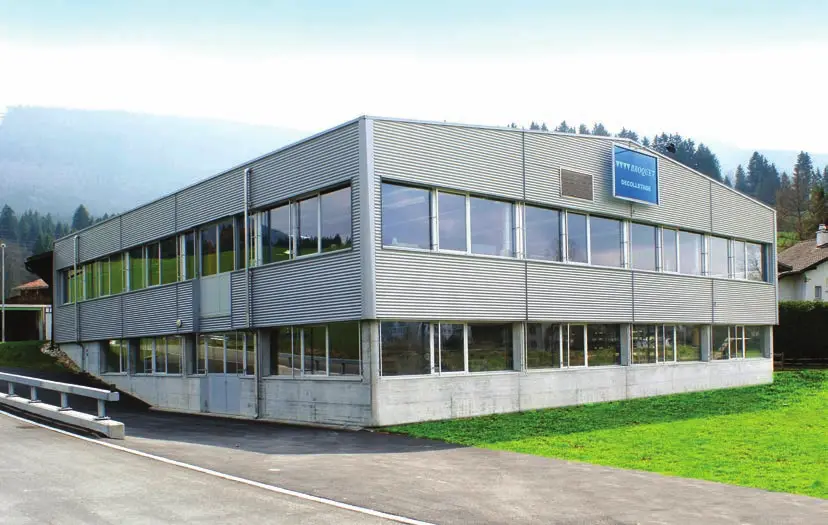
PublireportageBroquet Décolletage SA – Précision et excellence pour la haute horlogerie
Micro-composants décolletés à Bévilard
AxNum AG – Le partenaire d'excellence pour l'industrie des machines en Suisse
Presses, laser, vissage et axes motorisés pour constructeurs de machines
BCP Tourbillons SA – L'industrialisation au service de la complication horlogère
Olivier Moiry rend le tourbillon accessible
 Publireportage
PublireportageESCO SA – Trois-quarts de siècle pour un principe d'usinage tournant unique au monde
Les décolleteuses Escomatic fêtent les 75 ans de l'entreprise
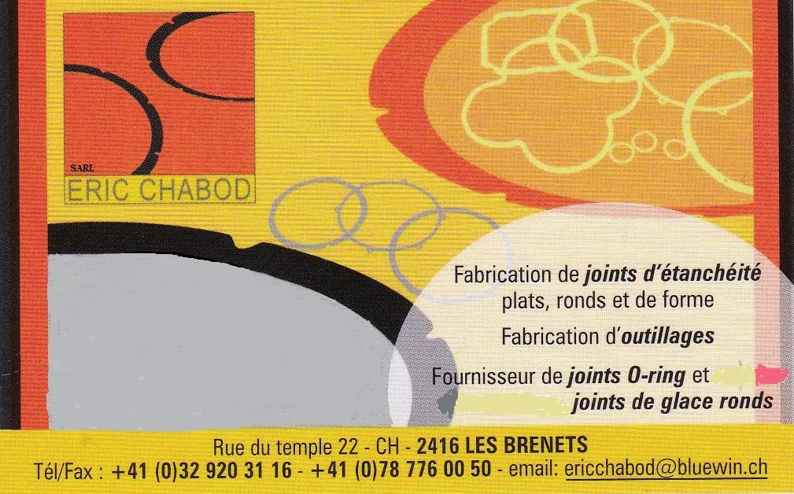
PublireportageLes Fils d'Henri Frei SA – Un siècle d'excellence au service de l'horlogerie
Décolletage et taillage à Court
 Publireportage
PublireportageGilbert Petit-Jean SA : l'expérience au cœur du monde horloger
Une même constellation pour trois entreprises horlogères
PublireportageBBHG SA : sculpter le temps avec élégance
Manufacture de boîtes et d'habillage horloger et joaillier
PublireportageBéguelin Sàrl : fournisseur de services, d'outillages
Mécanique de précision et outils horlogers
Muller Machines SA – Le paradis de la machine-outil d'occasion
Commerce de machines de seconde main et musée Centre Muller
 Publireportage
PublireportageOesch GmbH – Quatre décennies au service de l'horlogerie de qualité
Un nouveau fermoir pour les 40 ans de l'entreprise
PJ Made SA – Le partenaire discret des grandes marques horlogères
Assemblage de montres du T0 au T3 aux Brenets
Productec SA – Le numérique au service de l'optimisation des processus de fabrication
Distributeur et intégrateur exclusif de GibbsCAM
 Publireportage
PublireportageS & T Polissage – Un futur ambitieux pour l'atelier de polissage
Finitions horlogères à La Chaux-de-Fonds
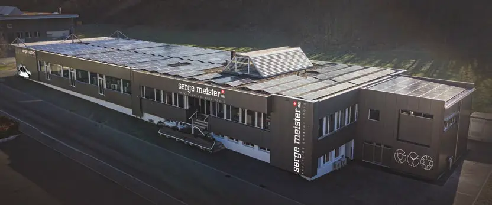
PublireportageSerge Meister SA – Davantage d'espace pour des serrages toujours plus précis
Extension et modernisation de l'usine de Court
 Publireportage
PublireportageSEBAL SA – Producteur de verres saphir entièrement suisses
Glaces de montres en saphir 100 % suisses à Bassecourt
PublireportageTIMSAPH SA – Du saphir synthétique 100 % suisse avec une empreinte environnementale unique
Durabilité et sécurité d'approvisionnement à Delémont
PublireportageSTOCO SA – Une nouvelle solution modulaire pour le pré-assemblage
La gamme de machines SVR présentée à l'EPHJ 2025
STOCO SA – Une machine à creusure CNC
La Creusomat pour les fabricants de pierres d'horlogerie
 Publireportage
PublireportageSTS Saulcy Traitement de Surface – Un laboratoire unique, moteur d'innovation en galvanoplastie
Traitements de surface pour l'horlogerie, le médical et la connectique
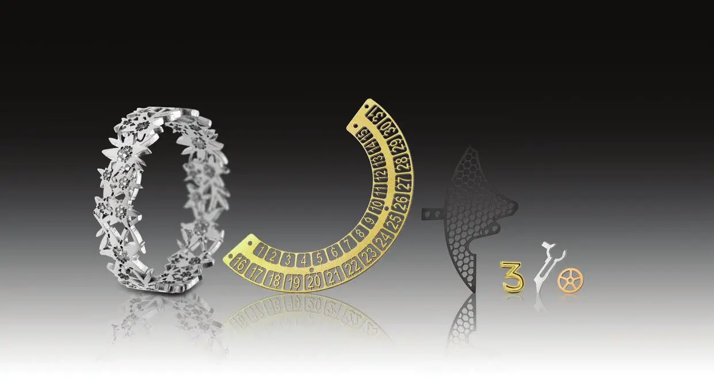
PublireportageTechnocut SA – Deux décennies d'excellence dans la découpe et gravure laser
Microdécoupe et marquage laser à Bonfol
 Publireportage
PublireportageTechnofinish SA – La robotique comme soutien au polissage
Un cobot pour copier le geste humain
PublireportageTechnoformage SA – Le biodégradable pour emballages et conditionnements
Plateaux de conditionnement en copeaux de bois et résine
 Publireportage
PublireportageVicro SA – Le savoir-faire de l'artisan au service de l'habillage horloger
Décalque, laque, Superluminova, collage et gravure laser à Porrentruy
Well Diamond Wire Saws – Un outil unique au monde, à la pointe de la technologie
Scies à fil diamanté fabriquées au Locle depuis 1974
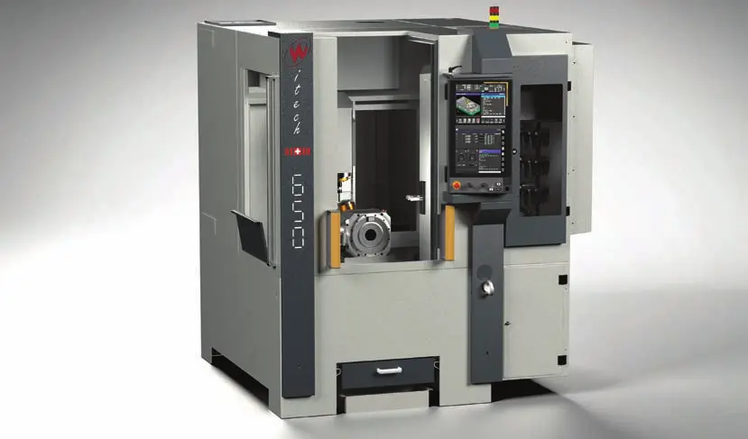
PublireportageWitech SA – Des machines-outils compactes au service de l'innovation industrielle
Centres d'usinage et tours ultra-compacts à Bassecourt

Le défi de faire entrer l'hôpital dans une nouvelle ère
Éditorial de Marc Devaud, directeur général (version allemande : Die Herausforderung, das Spital in eine neue Ära zu führen)
« Pour motiver les gens, il faut leur donner des perspectives »
Entretien avec Aline Schuwey, directrice des soins
L'amélioration continue de la gestion opérationnelle par la digitalisation
Entretien avec Stéphane Brand, directeur des opérations
 Interview
InterviewKlinik für Orthopädische Chirurgie und Traumatologie HFR
Interview mit Moritz Tannast, Professor und Chefarzt der Klinik für Orthopädische Chirurgie und Traumatologie
 Interview
InterviewKlinik für Allgemeine Chirurgie HFR
Interview mit Bernhard Egger, Professor und Chefarzt der Klinik für Allgemeine Chirurgie
L'analyse médicale digitalisée d'un bout à l'autre
Entretien avec Dr Jean-Luc Magnin, responsable du laboratoire
Il faut d'urgence préserver les urgences
Le professeur Ribordy tire la sonnette d'alarme
« Integrative Pädiatrie schafft ein riesiges Potenzial »
Interview mit Benedikt Huber, Leitender Arzt Pädiatrie
Die moderne Onkologie: Präzise und personalisiert
Im Gespräch mit Alessandra Curioni-Fontecedro, Professorin und Abteilungschefärztin Onkologie
Les urgences pédiatriques face à une fréquentation en augmentation
Entretien avec Dre Céline Ritter Schenk, médecin adjointe, pédiatrie
Les centres de santé, l'élément de proximité dans la structure de l'HFR
Entretien avec Dre Anne-Catherine Barras, médecin-cheffe adjointe, médecine interne générale
La néphrologie à l'HFR
Une large palette de soins et un suivi – Entretien avec Prof. Olivier Bonny, médecin-chef d'unité néphrologie
La césarienne douce pour mieux mettre au monde
Une option qui a fait ses preuves – Entretien avec Dr Nordine Ben Ali, médecin-chef adjoint en gynécologie et obstétrique
Klinik für Gynäkologie und Geburtshilfe HFR
Interview mit PD Dr. Dorothea Wunder, Leitende Ärztin Gynäkologie und Geburtshilfe
Das Mikrobiom von Kindern hat einen Einfluss auf ihre Gesundheit
Interview mit PD med. Petra Zimmermann, PhD, Stellvertretende Chefärztin Pädiatrie und Leiterin Kinderinfektiologie
Un master orienté médecine de famille
Collaboration fructueuse entre l'HFR et l'Université de Fribourg – Entretien avec Dr Antoine Meyer
Les enjeux de la réadaptation
L'HFR dans la réflexion et dans l'action – Entretien avec Dr Titus Bihl-Lainsbury
 Publireportage
PublireportageLa Caisse des Médecins – Une coopérative pour gérer la facturation des professionnel·les de santé
Company profile
 Publireportage
PublireportageBP-Conseils – Une collaboration constructive avec les institutions de soins
Company profile
Arthrex Swiss AG – Fournisseur d'implants et d'instruments chirurgicaux
Company profile (version allemande : Hersteller von Implantaten und chirurgischen Instrumenten)
Kessler & Co SA – Experts en gestion des risques et assurance pour les acteurs de la santé
Company profile
 Publireportage
PublireportageLes Blanchisseries Générales LBG SA – Pour du linge propre et hygiénique
Publireportage (résumé allemand inclus)
Les Ligues de santé – Fédérer les aides aux personnes souffrant de maladies chroniques
Company profile (version allemande : Gesundheitsligen – Bündelung von Hilfsangeboten für chronisch kranke Menschen)
Swisscom – Nouvel exploitant de l'infrastructure IT de l'hôpital fribourgeois d'ici la fin de l'année
Company profile (version allemande : Neuer Betreiber der IT-Infrastruktur des Freiburger Krankenhauses)
 Publireportage
PublireportageTrigonorm SA – Spécialiste des rayonnages modulables
Company profile
 Publireportage
PublireportageVitalRh – À la recherche de personnel médical pour le marché suisse
Company profile
 Interview
Interview« J'ai été fier de représenter cette industrie »
Interview de Jean-Daniel Pasche, président de la Fédération de l'industrie horlogère suisse FH
Dans le cœur des négociations du renouvellement de la CCT des industries horlogère et microtechnique suisses
Interview de Séverine Favre, secrétaire générale de l'apiah
« Plus de 65'000 personnes travaillent dans l'horlogerie en Suisse »
Interview de Ludovic Voillat, secrétaire général de la Convention patronale de l'industrie horlogère
Un siècle de recherche communautaire au service de la branche horlogère
Interview de Fabienne Marquis Weible, directrice de l'ASRH
Un soutien précieux dans la gestion de la conformité chimique des matériaux
Association pour l'assurance qualité des fabricants de bracelets cuir (AQC)
ArteCad SA – Création de cadrans avec éthique
L'un des plus importants fabricants de cadrans en Suisse
Broquet Décolletage SA – Précision au service de la haute horlogerie
Micro-pièces décolletées à Bévilard
Décors Guillochés SA – Vingt ans, vingt nouvelles décorations
Le guillochage, un art ancestral tourné vers l'avenir
ICAM SA – Renforcer sa position dans le monde de la digitalisation des ateliers de production
Rachat d'ICAM SA par Cyrille Monnin, propriétaire de Productec SA
Demant SA – L'excellence dans le monde des outils diamant
Outils diamant de haute précision pour le tournage et le fraisage
L'étrive – Une solution sociale pour la sous-traitance horlogère
La Fondation L'étrive à Bienne célèbre plus de 40 ans d'engagement en faveur de l'inclusion sociale
Greub Machines SA – Une référence sur le marché de la machine d'horlogerie en seconde main
Machines neuves et d'occasion pour l'industrie mécanique
INHOTEC SA – La manufacture au service de la précision
Composants et ébauches pour mouvements haute horlogerie au Locle
Leathertime – Raffinement et qualité pour protéger vos montres
Maroquinerie de luxe pour l'horlogerie et la joaillerie
Metafil - La Girolle SA – Des décolleteuses 100% swiss made
Les décolleteuses MTF développées et fabriquées à Lajoux
Muller Machines SA – Le paradis de la machine-outil d'occasion
Commerce de machines de seconde main et musée Centre Muller
Oesch GmbH – Spécialiste des éléments du bracelet cuir
Barrettes, boucles, fermoirs et accessoires d'emballage de luxe
Protofil Sàrl – Précision et complexité au bout du fil
Électroérosion à fil et micro-usinage à L'Orient
 Publireportage
PublireportageRessorts Industriels SA – Des ressorts de haute précision jusque dans les mouvements à complication
RISA à Courgenay
Sabato Group – Trois entités au service de l'horlogerie
Sabato Microtec, Sabato Lasertec et la nouvelle division Sabato Luxe
SEBAL SA – Producteur de verres saphir entièrement suisses
Glaces de montres en saphir 100 % suisses à Bassecourt
TIMSAPH SA – Le saphir synthétique 100 % suisse
Production de saphir synthétique à Delémont
Serge Meister SA – Le partenaire privilégié des décolleteurs
Serrages de haute précision au métal dur à Court
STOCO SA – Le pré-assemblage au service des manufactures
Garnissage, empierrage et machines de pré-assemblage à Cortaillod
 Publireportage
PublireportageTechnofinish SA – La robotique comme soutien au polissage
Un cobot pour reproduire le geste du polisseur
PublireportageTechnoformage SA – Le biodégradable pour emballages et conditionnements
Plateaux de conditionnement en copeaux de bois et résine

WOSTEP – La modularité dans la formation horlogère
Formations par modules et nouveau cours de rechargement par soudure laser
 Interview
InterviewL'horlogerie suisse est une industrie solide
Interview de Jean-Daniel Pasche, président de la Fédération de l'industrie horlogère suisse FH
 Interview
InterviewEPHJ – « Le salon est encore là pour longtemps ! »
Interview d'Alexandre Catton, directeur du Salon EPHJ
 Interview
InterviewTrouver du personnel : un défi pour la branche horlogère
Interview de Ludovic Voillat, secrétaire général de la CPIH
apiah – À l'aube de nouvelles négociations pour la future CCT
Interview de Séverine Favre, secrétaire générale de l'apiah
SSC Société Suisse de Chronométrie – Vers davantage de communication et de rencontres
Interview de Michel Fazzone, président de la Société Suisse de Chronométrie
 Interview
InterviewASRH – Une étude pour usiner correctement le laiton sans plomb
Interview de Fabienne Marquis Weible, directrice de l'ASRH
 Interview
InterviewAQC – Un test rapide pour déceler la présence de chrome (VI) dans le cuir
Interview de Gwénaëlle Hildebrand, directrice de l'AQC
A. AUBRY AG – 45 ans de savoir-faire dans l'industrie des plastiques
Joints d'horlogerie et microcomposants plastiques
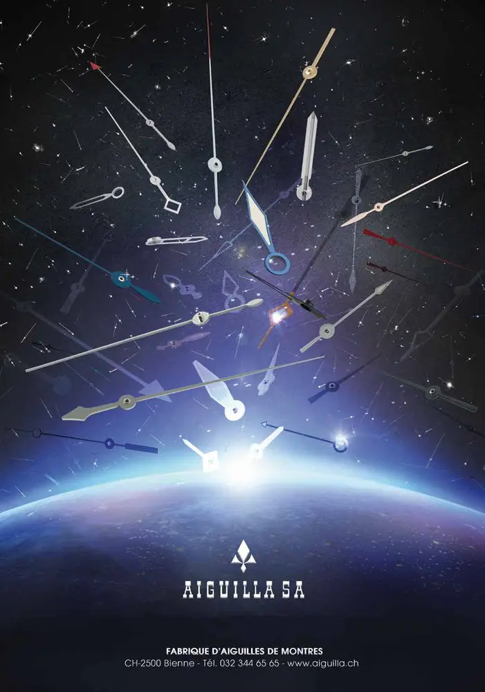
PublireportageArteCad SA – Innovation, savoir-faire, qualité
Manufacture de cadrans à Tramelan
BROQUET DÉCOLLETAGE SA – Précision au service de la haute horlogerie
Micro-pièces décolletées à Bévilard
PROMOTION GROUP – Un savoir-faire qui fêtera en 2023 : 45 ans d'existence !
Bracelets métal et habillage horloger
 Publireportage
PublireportageDemant SA – 70 ans d'expertise dans l'outil diamant
Outils diamant pour finitions poli-miroir
 Publireportage
PublireportageDIAMETAL GROUP – Des outillages de précision appropriés
Abrasifs, outils de coupe et pièces d'usure
DHVJ SA – Spécialistes de l'anglage et autres décorations horlogères
Décoration horlogère à la main à la vallée de Joux
MADE IN'ART SA – Le décolletage haut de gamme
Pièces squelettées pour la haute horlogerie
GIL SERTISSAGE SA – Compétences uniques et brevetées
Sertissage de diamants et pierres pour l'horlogerie
 Publireportage
PublireportageFLEURY SA – Doublement de la production en sous-traitance
Lignes de transfert modulaires et ébauches
 Publireportage
PublireportageINHOTEC SA – La manufacture au service de la précision
Composants et ébauches pour la haute horlogerie
LEATHERTIME – Raffinement et qualité pour protéger vos montres
Maroquinerie de luxe pour l'horlogerie
 Publireportage
PublireportageMEYLAN FRÈRES SA – Experts de l'étampage progressif de précision
Cinquante ans d'étampage au Brassus
 Publireportage
PublireportageMETAFIL - LA GIROLLE SA – Des décolleteuses 100 % Swiss made
Décolleteuses MTF et sous-traitance mécanique à Lajoux
 Publireportage
PublireportageMULLER MACHINES SA – Le paradis de la machine-outil d'occasion
Machines d'occasion et Centre Muller
Oesch GmbH – Spécialiste des boucles et fermoirs de qualité
Distribution d'accessoires pour bracelets
 Publireportage
PublireportagePOLYDEC SA – Décolleteurs de l'infiniment petit
Micro-décolletage à Bienne
PROTOFIL SÀRL – Précision et complexité au bout du fil
Électroérosion à fil et micro-usinage à la vallée de Joux
RESSORTS INDUSTRIELS SA – Des ressorts de haute précision jusque dans les mouvements à complication
Petits ressorts de précision à Courgenay
 Publireportage
PublireportageROLLOMATIC – Machines laser pour les outils de l'excellence horlogère
Affûtage et découpe laser d'outils coupants
SABATO GROUP – Conventionnel ou laser, le meilleur de l'usinage
Usinage de haute précision à Bienne
 Publireportage
PublireportageSUVEMA SA – Pionniers suisses de la fabrication CNC
Équipements de production CNC depuis 1974
 Publireportage
PublireportageSTOCO SA – Partenaires des manufactures pour le pré-assemblage
Garnissage, empierrage et machines T0
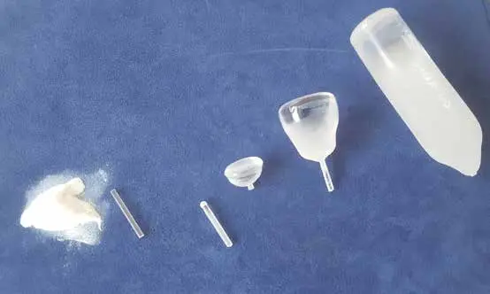
PublireportageTIMSAPH SA – Le saphir synthétique 100 % suisse
Production de saphir synthétique à Delémont
 Interview
InterviewL'ATIO – Point de repère depuis 2014
Interview d'Angelo Piritore et d'Alessandro Recalcati, coprésidents de l'ATIO
FRIEDEN et le Swiss Made depuis 1919 – Saphirs et rubis de haute précision
Traitement de pierres synthétiques à Balerna
ECOMETAL – Une entreprise efficace et dynamique depuis 15 ans
Récupération des métaux précieux
SYC MONTRES SA – La meilleure adresse pour des montres complètes
Conception et fourniture horlogère au Tessin
Rudolf Brügger SA – Leader dans le domaine des composants micromécaniques
Haute précision dans les matériaux extra-durs
MONTRELUX – Professionnalisme, qualité et flexibilité
Assemblage et personnalisation de montres-bracelets de haute qualité
 Interview
InterviewFédération de l’industrie horlogère suisse – Interview de Monsieur Jean-Daniel Pasche
Federation of the Swiss Watch Industry FH – Interview with Mr Jean-Daniel Pasche
 Interview
InterviewASRH – Association Suisse pour la Recherche Horlogère : « La science au profit de l’horlogerie »
Interview de Fabienne Marquis Weible, directrice de l’ASRH
DossierSociété Suisse de Chronométrie – « L’incontournable référence horlogère »
Avec Michel Fazzone, directeur manufacturing chez Jaeger-LeCoultre, président de la SSC
 Interview
InterviewEPHJ – En 2022, EPHJ fête ses 20 ans d’existence et promet une édition très spéciale
Interview d’Alexandre Catton, directeur du Salon EPHJ / Interview with Alexandre Catton, Director of the EPHJ trade show
Admo Plastique SA
Quarante ans d’injection thermoplastique de précision au Locle
Broquet Décolletage SA – Précision au service de la haute horlogerie
Des micro-pièces décolletées à Bévilard
Auchlin SA – L’innovation, moteur de son développement
La troisième génération rejoint l’expert du polissage de précision
Bandi SA – Fabricant de composants de très haute qualité
Décolletage de composants horlogers haut de gamme à Courtételle
Chatelain Prototypes Sàrl – Des outils développés selon les besoins des professionnels
Prototypage horloger et potences connectées à Tramelan
 Publireportage
PublireportageColoral SA – Une nouvelle usine pour réunir les forces
Usinage et anodisation de l’aluminium désormais à Cressier
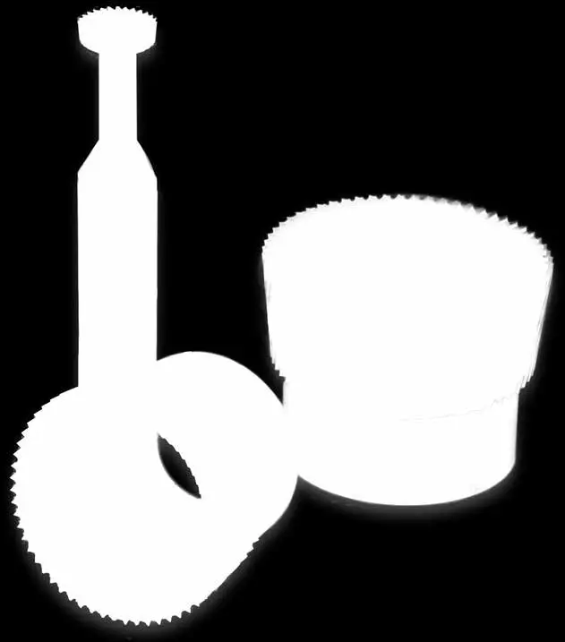
PublireportageMicromécanique et horlogerie, des synonymes de précision et d’excellence du Groupe DIAMETAL
Outils de coupe, abrasifs et pièces d’usure depuis 1936
 Publireportage
Publireportaged-Tec Dubois technologies associées SA – Exceller dans le traitement de surface grâce à des méthodes originales
Polissage et traitements de surface pour la haute horlogerie à L’Abbaye
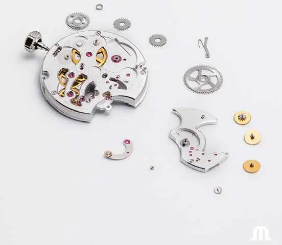
PublireportageFleury SA – Un sous-traitant à la pointe de la qualité
Fleury SA – A subcontractor at the cutting edge of quality
 Publireportage
PublireportageFormoplast SA – L’art du travail sur le plastique
Équipements en plastique sur mesure à Yverdon-les-Bains
PublireportageGMTI SA – Un savoir-faire d’excellence de la conception à l’assemblage
Sous-traitance horlogère polyvalente à Plan-les-Ouates
 Publireportage
PublireportageInhotec SA – Réactivité et excellence au service de la haute horlogerie
Usinage de précision et verticalisation au Locle
PublireportageLeathertime – La passion du cuir de qualité
Maroquinerie de luxe sur mesure pour les marques horlogères
PublireportageProtofil Sàrl – Précision et complexité au bout du fil
Électroérosion à fil et micro-usinage à la Vallée de Joux
 Publireportage
PublireportageLabel Surface – Une créativité sans limite
Décoration de cadrans artistiques et casting de précision
PublireportageMétafil-La Girolle SA – Des décolleteuses 100 % Swiss made
Les décolleteuses MTF et une girolle plus verte
 Publireportage
PublireportageMeylan Frères SA – Jubilé pour les experts de l’étampage progressif
50 ans d’étampage au Brassus
PublireportageMLV et Adhezion – Deux expertes sous le même toit
Pose de produits luminescents et collage de composants à La Chaux-de-Fonds
Oesch GmbH – Boucles, fermoirs et accessoires. Les détails qui font la différence
Plus de trente ans d’expérience dans les petites pièces indispensables
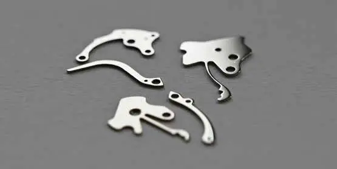
PublireportagePolissages Gautier SA – Diversification des compétences
Polissage en vrac de petites pièces à Cortébert
Groupe Promotion – Spécialistes du bracelet métallique pour l’horlogerie
Un groupe italo-suisse orienté innovation
 Publireportage
PublireportageRessorts Industriels SA – Des ressorts de haute précision jusque dans les mouvements à complication
RISA à Courgenay
PublireportageStoco SA – Les spécialistes du pré-assemblage horloger
Machines de garnissage et sous-traitance T0 à Cortaillod
 Publireportage
PublireportageRyf AG – Les experts de la microscopie industrielle
Microscopes et systèmes de mesure à Granges
 Publireportage
PublireportageSTL Swiss SA – Un nouvel écrin pour les bracelets haut de gamme
Nouvelle usine à Lengnau pour le spécialiste du bracelet métallique
PublireportageSchmidt Technology GmbH
Presses manuelles, pneumatiques, électriques et servopresses pour l’horlogerie
 Publireportage
PublireportageSebal SA – Producteur de verres saphir entièrement suisses / Timsaph SA – Le saphir synthétique 100 % suisse
Glaces de montres et matière première produites dans le Jura
 Publireportage
PublireportageTechnoFinish SA – La fiabilité suisse à votre service depuis 2003 / TechnoFormage SA – Des solutions pour l’emballage thermoformé et injecté
Polissage, brosses techniques et conditionnement, désormais aussi biodégradable
 Publireportage
PublireportageWostep – Former les meilleurs polisseurs, un engagement du WOSTEP
La Fondation WOSTEP et ses formations en polissage
 Interview
Interview« La branche résistera car les produits sont attractifs »
Interview de Jean-Daniel Pasche, président de la Fédération de l'industrie horlogère suisse FH
 Interview
InterviewL'innovation, un levier de différentiation majeur pour l'industrie de haute précision
Interview d'Alexandre Catton, directeur du Salon EPHJ
 Publireportage
PublireportageALTMANN CASTING SA – Œil expert au service de l'horlogerie et de l'orfèvrerie
Fonte de haute précision et prototypage rapide
WATCH CITY – Le sport, une école de vie
La plateforme horlogère biennoise au service du sport régional
 Publireportage
PublireportageAUCHLIN SA – Les experts du polissage
Polissage de haute précision depuis 1945
CONCEPT CNC DESIGN SA – Un partenaire performant pour la sous-traitance horlogère
Composants d'habillage du cadran
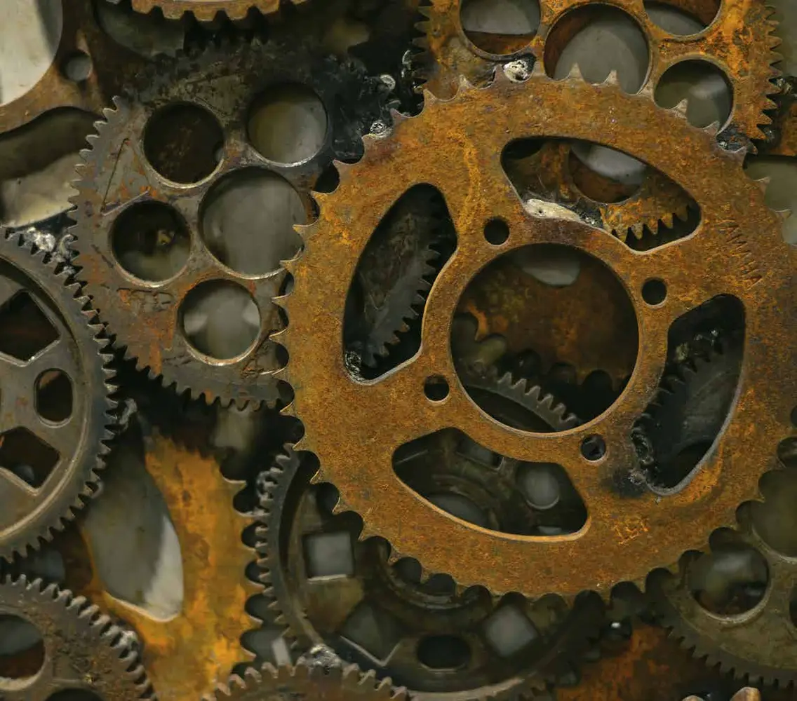
PublireportageChatelain Prototypes Sàrl – Les spécialistes du prototypage
Prototypes, petites séries et outillage pour l'horlogerie
 Publireportage
PublireportageCYBERIS – Le spécialiste de la visserie haut de gamme
Décolletage jurassien et industrie 4.0
DÉCORS GUILLOCHÉS SA – Une décoration pour jouer avec la lumière
Le guillochage main au service de la haute horlogerie
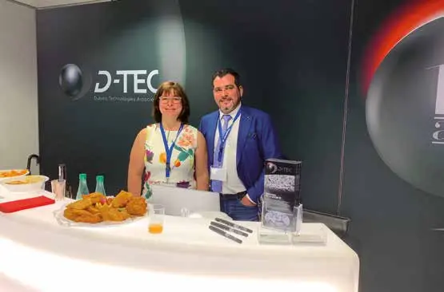
Publireportaged-Tec Dubois technologies associées SA – Exceller dans le traitement de surface grâce à des méthodes originales
Polissage et traitements de surfaces à L'Abbaye
Micromécanique et horlogerie, des synonymes de précision et d'excellence du Groupe DIAMETAL
Outils de coupe, abrasifs et pièces d'usure
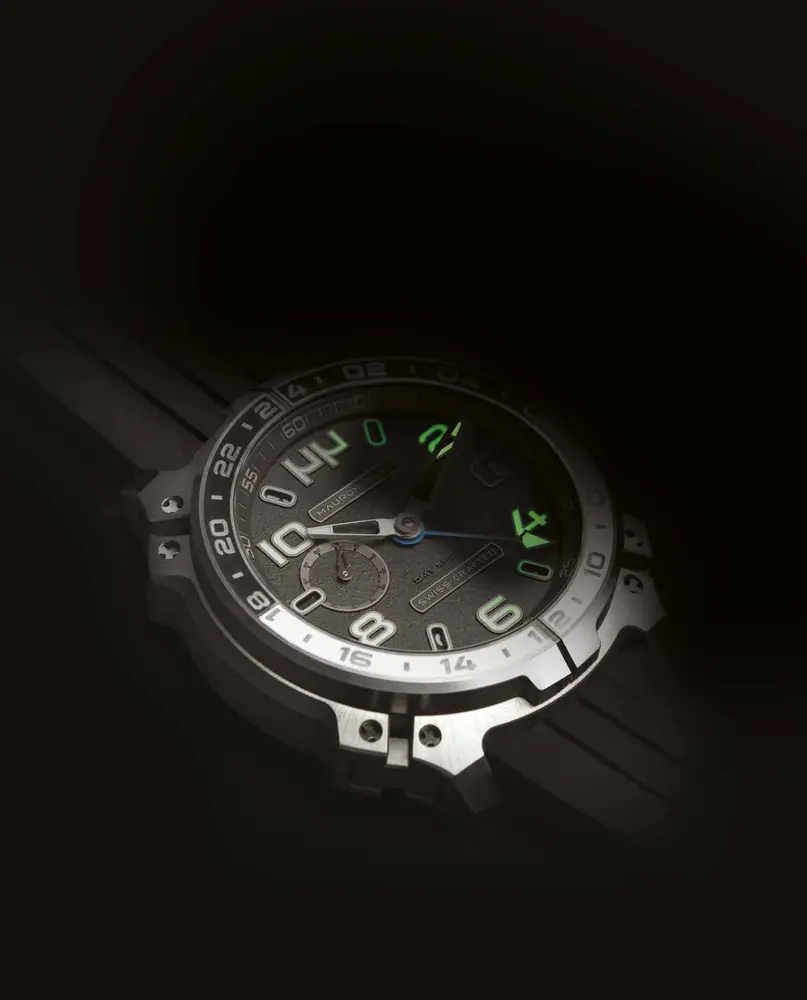
PublireportageGREUB MACHINES SA – Pour trouver votre machine, neuve ou d'occasion
Vente et révision de machines-outils
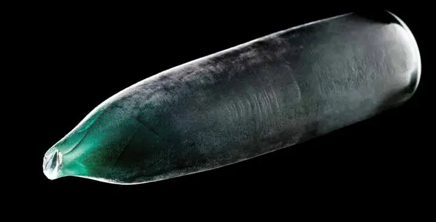
PublireportageECONORM AG – Révélateur de beauté
Verres saphir fonctionnels 100 % suisses
 Publireportage
PublireportageHENRI ROBERT – Outils de coupe à haute valeur ajoutée
Outils de coupe en métal dur sur mesure
INHOTEC SA – Une palette de prestations complètes pour la fabrication de mouvements
Composants de mouvements pour la haute horlogerie
JUVAL HORLOGERIE – La tendance montante des montres vintage
Horlogerie de collection à La Chaux-de-Fonds
MEYLAN FRÈRES SA – Experts de l'étampage progressif
Pièces étampées minuscules et complexes
 Publireportage
PublireportageMECO SA – L'art de couronner la montre
Couronnes, poussoirs, correcteurs et valves à hélium
MPS WATCH – Le leader des roulements à billes pour l'horlogerie
Roulements, mobiles et composants terminés du mouvement
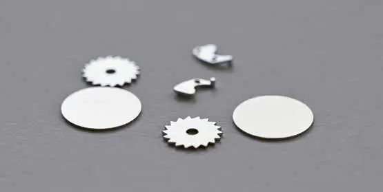
PublireportagePOLISSAGES GAUTIER SA – Une énergie nouvelle
Polissage en vrac à Cortébert
PRODUCTEC SA – Votre partenaire pour optimiser votre chaîne numérique
Logiciels CFAO et services de programmation CNC
 Publireportage
PublireportageSUVEMA SA – Pionniers suisses de la fabrication CNC
Équipements de production CNC depuis 1974
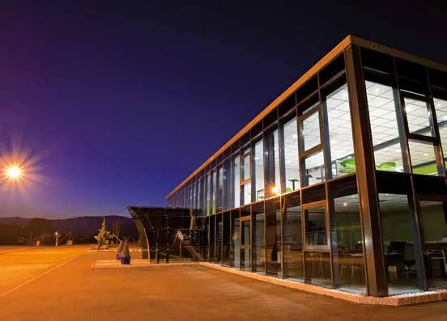
PublireportageSEBAL SA – Producteur de verres saphir entièrement suisses
Glaces de montres en saphir à Bassecourt
TIMSAPH SA – Le saphir synthétique 100 % suisse
Production de saphir synthétique à Delémont
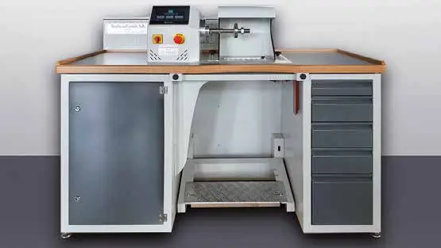
PublireportageTECHNOFINISH SA – La fiabilité suisse à votre service depuis 2003
Machines et produits de polissage
TECHNOFORMAGE SA – Des solutions pour l'emballage thermoformé et injecté
Conditionnement de pièces horlogères terminées
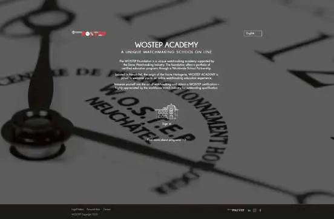
PublireportageWOSTEP – Enseigner l'horlogerie à l'heure du digital
La Fondation WOSTEP se lance dans l'e-learning
TCI ENGINEERING SA – L'automatisation à la carte
Lignes automatisées pour l'horlogerie et l'industrie
ArteCad SA – Innovation, savoir-faire, qualité
Manufacture de cadrans à Tramelan
CV DÉCOR Sàrl – Réactivité et excellence en décoration horlogère
Décoration de mouvements au Locle
BROQUET DÉCOLLETAGE SA – Précision au service de la haute horlogerie
Décolletage de micro-pièces à Bévilard
SCHMIDT TECHNOLOGY GmbH
Presses pour le secteur horloger
BEAUREGARD MANUFACTURE SA – Swiss Made & Made in Europe
Habillage horloger et accessoires de luxe
ESTOPPEY-ADDOR SA – Le couteau suisse par excellence de la galvanoplastie
La plus ancienne galvanoplastie de Suisse
 Interview
InterviewFédération de l’industrie horlogère suisse FH
Interview de Jean-Daniel Pasche, président de la Fédération de l’industrie horlogère suisse FH
Salon EPHJ – Le monde de la haute précision
Entretien avec Alexandre Catton, directeur du Salon
TWS Technical Watchmaker Show – La passion et l’authenticité de la technique horlogère
Entretien avec Eric Zuccatti, président du Technical Watchmaker Show
 Interview
InterviewL’Association suisse pour la recherche horlogère – Objectif : préparer l’arrivée du laiton sans plomb
Entretien avec Fabienne Marquis Weible, directrice de l’ASRH
Société suisse de chronométrie (SSC) – « L’innovation est le moteur de l’industrie horlogère »
Rencontre avec son président, Nicolas Clerc
Baselworld – Le salon horloger se réinvente pour assurer l’avenir
Entretien avec Michel Loris-Melikoff, Managing Director de Baselworld
 Interview
InterviewL’apiah – La voix des entreprises pour assurer la paix du travail
Entretien avec Marie-Thérèse Kohler Fiorellino, secrétaire générale de l’apiah
DM Surfaces – Du laser par ablation à la fabrication additive
Entreprise lauréate du Prix Raiffeisen des Entrepreneurs
Aiguilla SA – Seconde après seconde, un maître du ballet des aiguilles
Aiguilla SA, second after second, mastering the whirl of watch hands
 Publireportage
PublireportageAbarthel Sàrl – Artisan au service de l’esthétisme horloger
ABARTHEL Sàrl, craftsman at the service of watchmaking aesthetics
Broquet Décolletage SA – Précision au service de la haute horlogerie
Des micro-pièces décolletées à Bévilard
CV Décor Sàrl – Réactivité et excellence en décoration horlogère
Une jeune société locloise portée par l’expérience de son fondateur
 Publireportage
PublireportageAdmo Plastique SA – Pour du plastique toujours plus vert
Injection plastique pour l’horlogerie et matériaux bio-sourcés au Locle
Label Surface – Artisans de haut vol
Décoration de cadrans artistiques à La Chaux-de-Fonds
Innovative CAM SA – Spécialistes en digitalisation de la production
Au service de l’industrie 4.0
Somtec-CH – De la sous-traitance jusqu’à la machine de polissage
Une société chaux-de-fonnière en plein essor
Econorm AG – L’art de sublimer la transparence
ECONORM AG – Die Kunst des vollkommenen Durchblicks
 Publireportage
PublireportageLécureux SA – Avant-gardisme et performance au cœur du développement
LECUREUX SA, avant-gardism and performance at the heart of development
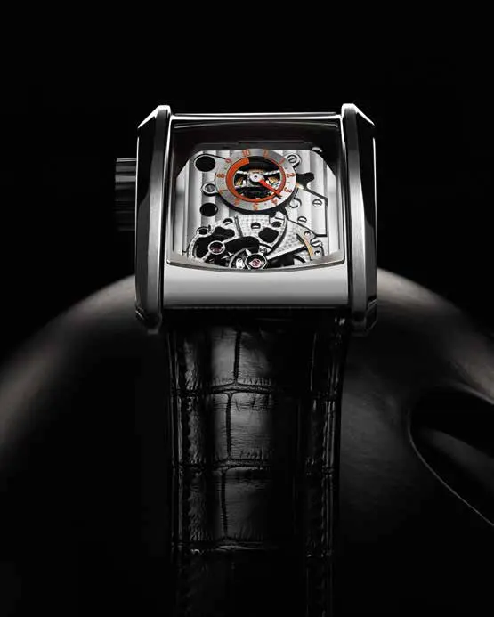
PublireportageLes Artisans Boîtiers SA – Un savoir-faire unique pour des boîtes d’exception
Des synergies renforcées avec Quadrance & Habillage
 Interview
InterviewRyf AG – L’évidence de la qualité
Entretien avec Daniel Ryf, directeur général
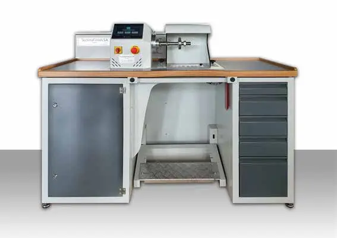
PublireportageTechnoFinish SA – La fiabilité suisse à votre service depuis 2003 / TechnoFormage SA – Des solutions pour l’emballage thermoformé et injecté
Polissage, brosses techniques et conditionnement pour l’horlogerie
 Publireportage
PublireportageClaude Piguet SA – Leader du polyuréthane
La petite société familiale de Grandson aux compétences uniques
Dihawag Horlogerie – Au service de l’industrie horlogère
Spécialiste du décolletage et du fraisage
 Publireportage
PublireportageMétafil-laGirolle SA – L’injection par moulage de poudre comme diversification
Sous-traitance mécanique, décolleteuses maison et girolles à Lajoux
 Publireportage
PublireportageEscad SA – L’expertise en vernis et laques pour cadrans
Vernissage et laquage de composants horlogers à La Chaux-de-Fonds
Inhotec SA – À la pointe de la technologie pour des résultats toujours plus performants
Nouveaux locaux et équipements pour l’usineur de précision du Locle
Monnier SA élargit encore son offre – Prestations multiples sous le même toit
Électroplastie et décoration horlogère à La Chaux-de-Fonds
Procolor LCTI, tampographie horlogère – Un mariage de cœur et de raison
La tampographie rejoint Monnier SA à La Chaux-de-Fonds
 Publireportage
PublireportagePierre Bercher SA – Injection plastique pour l’horlogerie depuis 40 ans
Un pionnier de la pièce technique injectée à Cernier
 Interview
InterviewOesch GmbH – Boucles, fermoirs et accessoires pour l’horlogerie
Entretien avec M. Michel Oesch, propriétaire et directeur de l’entreprise
 Publireportage
PublireportageSebal SA – Producteur de verres saphir entièrement suisses / Timsaph SA – Le saphir synthétique 100 % suisse
Verres de montres et matière première produits dans le Jura
 Publireportage
PublireportageTSM Compagnie d’Assurances – L’assureur sur-mesure du monde horloger
Assurance transport et risques spéciaux depuis La Chaux-de-Fonds
 Publireportage
PublireportageVOH SA – Appareils pour sublimer le geste horloger
Des équipements développés et fabriqués à Courtelary
 Publireportage
PublireportageGMG Composants – Pour des aiguilles et index d’exception
Aiguilles, appliques et désormais ponts et parties de cadran au Locle
La Région de Nyon, un laboratoire de la démocratie représentative
Interview de Gérald Cretegny, président de la Région de Nyon, syndic de Gland
La Région de Nyon, une pionnière en matière de mobilité
Interview de Pierre Graber, responsable de la mobilité au sein du comité de direction, syndic de Saint-Cergue
Maîtriser la densification du territoire
Interview de Frédéric Mani, responsable politique de la planification territoriale, syndic de Dully
Protéger l'environnement pour une meilleure qualité de vie
Interview de Gudrun Russig, responsable de l'environnement au sein du comité de direction, municipale à Signy-Avenex
Maintenir la diversité économique de la région
Interview de Daniel Rossellat, vice-président de la Région de Nyon et responsable de l'économie, syndic de Nyon
Fédérer les acteurs au service du rayonnement régional
Interview de Gérard Produit, responsable de la culture, du tourisme et du sport, syndic de Coppet
Morges – Une ville en pleine mutation
Interview de Vincent Jaques, syndic de la ville
Promotion économique – « L'économie morgienne est la pièce d'un puzzle entre Lausanne et Genève »
Interview de Pascal Rocha da Silva, délégué à la promotion économique de la Ville de Morges
Le Livre sur les quais célèbre la littérature sous toutes ses formes
Interview de Christelle Joly, cheffe de l'Office de la culture de la Ville de Morges

Saint-Prex, bijou du Léman
Rencontre avec Daniel Mosini, syndic
 Interview
InterviewAubonne – Grandir modérément, tout en gardant son identité
Rencontre avec Luc-Étienne Rossier, syndic
Cossonay – Objectif : rester un pôle régional fort
Interview de Georges Rime, syndic
 Interview
InterviewPréverenges, l'harmonieuse
Interview de Guy Delacrétaz, syndic
 Publireportage
PublireportageAtelier 94 Architecture SA – Dessiner le futur de la ville de Nyon
 Publireportage
PublireportageChemin de fer Nyon - St-Cergue - Morez à un tournant de son histoire
PublireportageLes Transports publics de la région nyonnaise SA (TPN) – Croissance positive et continue
 Publireportage
PublireportageCoretra SA – Pour une architecture rationnelle et fonctionnelle
 Publireportage
PublireportageReymond Frères SA – Votre fournisseur de matériaux pour tout type de chantier
 Portrait
PortraitLe Domaine de Bois-Bougy – Diversification agricole exemplaire
 Interview
InterviewInstitut fédéral des hautes études en formation professionnelle IFFP – Préparer l'avenir de la formation professionnelle
Interview de Jean-Pierre Perdrizat, directeur par intérim
 Publireportage
PublireportageBalmelli SA – Maçonnerie, béton armé, transformation, travaux publics
 Publireportage
PublireportageRGR Ingénieurs Conseils SA – La gestion de la mobilité urbaine orchestrée par des experts
 Publireportage
PublireportageSEFA SA – Société électrique des forces d'Aubonne, partenaire incontournable de la transition énergétique
 Publireportage
PublireportageSennwald Architectes
Wonderware SA – Des solutions logicielles pour la conduite et l'optimisation des sites industriels, des infrastructures techniques et des villes intelligentes
Software solutions for driving and optimising industrial sites, technical infrastructures and smart cities
 Publireportage
PublireportageG&N Wuthrich SA – Des prestations de conseiller pour la rénovation et la transformation
 Publireportage
PublireportageTransports de la région Morges Bière Cossonay – MBC : des échappées touristiques aux voyages sur mesure
Unir précision et esthétique dans la matière dure
Saphirwerk AG met ses talents d’usinage des matériaux durs au service de la haute horlogerie
 Interview
Interview« Tant que les gens auront des émotions, ils achèteront des montres ! »
Entretien avec Jean-Daniel Pasche, président de la Fédération de l’industrie horlogère suisse FH
Le Salon EPHJ-EPMT-SMT, la vitrine du savoir-faire de haute précision
Entretien avec Alexandre Catton, directeur du Salon
L’Association suisse pour la recherche horlogère (ASRH) – Une interface entre la recherche et l’industrie
Entretien avec Fabienne Marquis Weible, directrice
TWS Technical Watchmaker Show – Le rendez-vous des acteurs techniques de l’horlogerie
Entretien avec Eric Zuccatti, président du Technical Watchmaker Show
Association des Fabricants de Décolletages et de Taillages – Une association qui veille à la relève
Entretien avec Dominique Lauener, président de l’AFDT
Aiguilla SA – Seconde après seconde, un maître du ballet des aiguilles
Aiguilla SA, second after second, mastering the whirl of watch hands
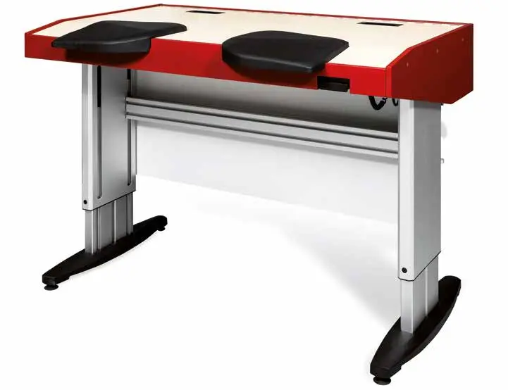
PublireportageCovatec SA – L’automation au service de l’horlogerie
Covatec SA, automation used for watchmaking
 Publireportage
PublireportageDC Swiss SA
Double page réservée (texte non finalisé dans la version web)
DM Surfaces – Ultra-personnalisation
Décoration et traitements de composants horlogers haut de gamme à Saint-Imier
Econorm Gams AG – Des saphirs à la surface fonctionnelle
Econorm Gams AG – Von Saphiren zu einer funktionellen Oberfläche
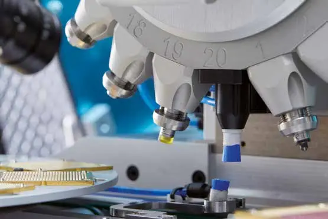
PublireportageFleury SA – Le fournisseur de performance
Fleury Industries, un partenaire de confiance pour la sous-traitance
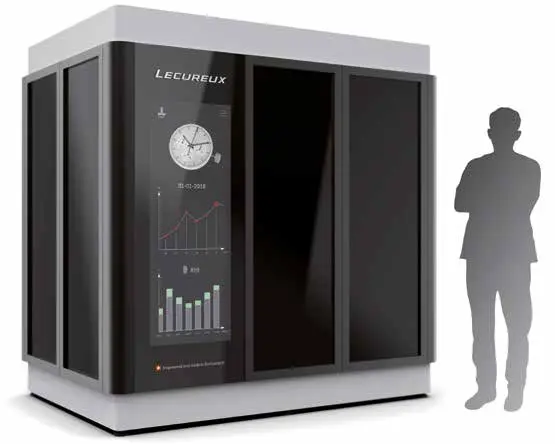
PublireportageLécureux SA – Partenaire à chaque étape de la fabrication horlogère
Lécureux SA, partner at every stage of watchmaking production
 Publireportage
PublireportageLes Artisans Boîtiers SA
Boîtes de montres sur mesure et composants microtechniques à La Chaux-de-Fonds
 Publireportage
PublireportageMPS Watch – Innovation et performance
Let’s innovate together
Sebal SA – Des produits 100 % suisses / Timsaph SA – Du saphir 100 % suisse
Verres de montres en saphir et production de matière première dans le Jura
 Publireportage
PublireportageStila SA – Artisans boîtiers prêts pour le futur
Une entreprise familiale de boîtes de montres haut de gamme qui se modernise
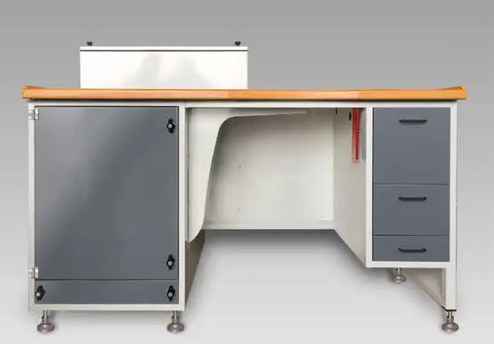
PublireportageTechnoFinish SA – La fiabilité suisse à votre service depuis 2003 / TechnoFormage SA – Des solutions pour l’emballage thermoformé et injecté
Polissage, brosses techniques et conditionnement pour l’horlogerie
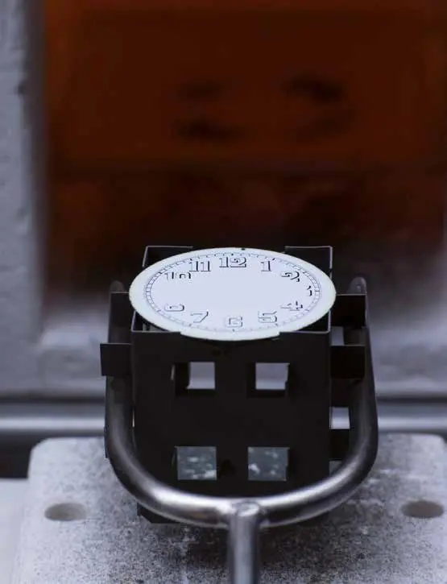
PublireportageAbarthel Sàrl – L’art de l’émail grand feu
Le spécialiste des masses oscillantes se diversifie dans les cadrans émaillés
André Frei & Fils SA
Entretien avec M. Christian Frei, directeur
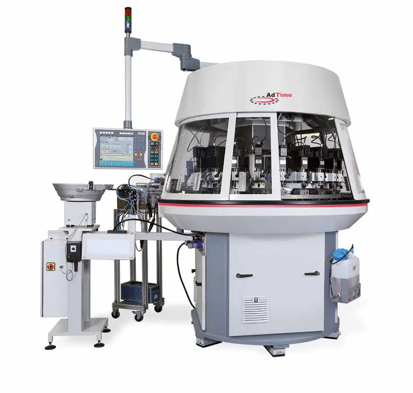
PublireportageAdTime SA – Machines spéciales et à la carte
Centres de reprise et de transfert personnalisés pour l’horlogerie
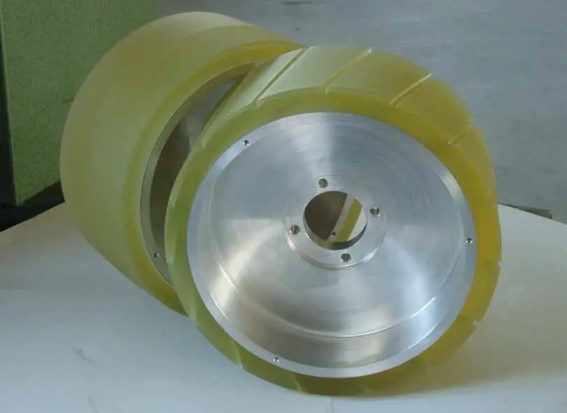
PublireportageClaude Piguet SA – Leader du polyuréthane
Une petite société familiale de Grandson aux compétences uniques
 Publireportage
PublireportageCodere SA – Le spécialiste du traitement thermique
Codere fête ses 30 ans
Concepto Watch Factory SA – Tourbillons, complications et répétitions
Une manufacture de mouvements indépendante en pleine expansion
Cyberis SA – Un précieux partenaire
Décolletage de précision et réactivité à Bassecourt
Pibor Iso SA – Créateurs d’habillage horloger
Des couronnes et poussoirs aux pièces d’habillage complexes et complètes
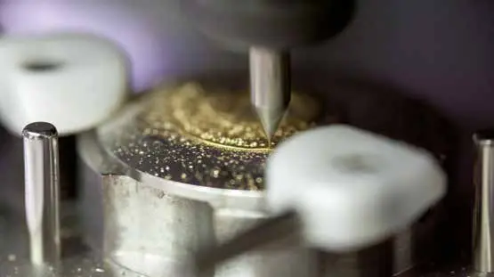
PublireportageDécotech SA – Les spécialistes de la décoration de mouvements horlogers
Une entreprise chaux-de-fonnière qui s’agrandit
Erma Boécourt SA – Précision extrême et transparence hors normes
Entretien avec Patrick Vernier, CEO et directeur technique
 Publireportage
PublireportageHorlyne SA – Virtuose du décor en mouvement depuis 1978
Masses oscillantes et métiers d’art à La Chaux-de-Fonds
Greub Machines SA – Pour trouver votre machine, neuve ou d’occasion
Greub Machines SA, find your machine, new or second hand
Inhotec SA – L’usinage de précision au service des grandes marques horlogères
Une entreprise locloise en forte croissance depuis 2011
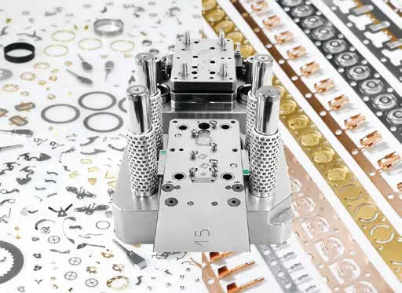
PublireportageMeylan Frères SA – Étampeur au service de l’horlogerie
Le spécialiste de la pièce micromécanique
 Publireportage
PublireportageMonnier SA et Procolor – Deux experts de la décoration s’unissent
Décoration de mouvements et tampographie sous une même entité
 Publireportage
PublireportageCronal SA – L’excellence de la gravure depuis trente ans
Une entreprise de gravure de haute précision dans de nouveaux locaux
Oesch GmbH – Boucles, fermoirs, barrettes et charnières en acier inox
Oesch GmbH – Buckles, clasps, spring bars and hinges in stainless steel
Kohler Electroplastie Sàrl – Un gage de qualité
Dépôts de métaux précieux à Genève
STL Swiss SA – Le spécialiste du bracelet métallique 100 % suisse
STL Swiss SA, the 100% Swiss metal strap specialist
 Publireportage
PublireportageWaeber HMS – Un délicat alliage de traditions artisanales et d’innovation
Une manufacture d’aiguilles de montres au Val-de-Travers
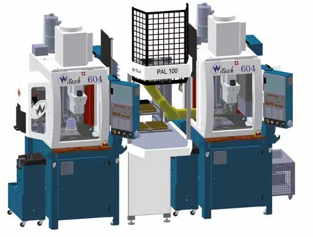
PublireportageWitech SA – Machines-outils compactes et précises
Une petite structure de Bassecourt reconnue pour la stabilité de ses machines
 Publireportage
PublireportageWostep – Perfectionnement horloger à la carte
Une école internationale d’horlogerie qui forme aussi l’industrie locale
Ynovatec SA – Fournisseur exclusif en équipements d’automation
Distribution et développements propres en automation industrielle
Auchlin SA – Maître du polissage d’excellence
L’expert du polissage de précision à La Neuveville depuis plus de septante ans
Beco Precision SA et Cebo Injections SA – Deux experts de l’injection thermoplastique au service de l’horlogerie
Moules haute technologie et injection plastique à Vallorbe
BECS Sàrl – Un service global pour le secteur horloger / CNJ Duret SA – Le savoir-faire à votre service
Bureau d’études et atelier de mécanique de précision à Satigny
AEE SUISSE: «Mit der Wasserkraft haben wir für die Energiewende einen fliegenden Start»
Interview mit Gianni Operto, Präsident AEE SUISSE
AEE Suisse romande
Interview de Monsieur Andréas von Kaenel, Directeur AEE Suisse romande
«Man kann den Bären nicht waschen, ohne das Fell nass zu machen.»
Interview mit Ständerat Dr. Beat Vonlanthen
Ville de Vevey
Interview de Monsieur Jérôme Christen
Favoriser la production d’énergie renouvelable
Interview de Konrad Rieder, Directeur des Affaires régulatoires des SIG
Energies Nouvelles Valais
Interview de Monsieur Francis Rossier, président Energies Nouvelles Valais
Énergies nouvelles Vaud
Interview de Monsieur Michel Herzen, Président des énergies nouvelles de Vaud
Canton de Vaud
Interview de Monsieur Laurent Balsiger, Directeur de l’énergie du Canton de Vaud
Énergies nouvelles Vaud
Interview de Monsieur Patrick Chiché, vice-président d’Energies Nouvelles Vaud
Du laboratoire jusqu’à l’industrie
Interview de Monsieur Christophe Ballif, Prof. EPFL, directeur du PV-Lab et du PV-center au CSEM
Centre de l’énergie CEN – Catalyser et fédérer
Interview de Monsieur François Vuille, Directeur du Centre de l’énergie (CEN) de l’EPFL
Haute Ecole d’Ingénierie du Valais – Investir pour doper la recherche
Interview de Monsieur Gaëtan Chérix, directeur de la Haute Ecole d’Ingénierie du Valais
Pôle Energies HEIG-VD – Objectif : fédérer les recherches à l’interne
Interview de Monsieur Massimiliano Capezzali, Professeur à la Haute Ecole d’Ingénierie
Canton du Valais
Interview de Monsieur Joël Fournier, Chef du service de l’énergie et des forces hydrauliques du Valais
Énergies nouvelles Fribourg
Interview de Monsieur Laurent Caillère, président d’Energies Nouvelles Fribourg
Canton de Fribourg
Interview de Monsieur Serge Boschung, chef du Service de l’énergie Fribourg
Kanton Wallis
Interview mit Roberto Schmidt, Staatsrat, Chef des Departements für Finanzen und Energie
Stadt Aarau: «Die Energiestadt Aarau bekennt sich zu den Zielen der 2000-Watt-Gesellschaft»
Interview mit Dr. Hanspeter Hilfiker, Stadtpräsident
Kanton Basel-Stadt
Interview mit Regierungsrat Christoph Brutschin, Vorsteher Departement für Wirtschaft, Soziales und Umwelt
Neyruz pour un avenir durable
Interview de Martial Wicht, Syndic de Neyruz
AJS Ingénieurs civils SA – Des experts de l’analyse au service de grands ouvrages
Publireportage
BETELEC – Smart electricity management
Intelligentes Elektrizitätsmanagement (français et allemand)
Cinelec SA
Contrôle indépendant des installations électriques
Drosera Ecologie Appliquée SA – Des compétences reconnues depuis plus de 25 ans
Publireportage
CSD Ingénieurs SA – Un planificateur général doublé d’un spécialiste exigeant
Interview de M. Jean-Pascal Gendre, CEO
DPE Electrotechnique SA – De l’étude à la réalisation
Publireportage
ECOSCAN, études en environnement – Un spécialiste polyvalent
Interview de Jérôme Duval, sous-directeur
Groupe E – Une offre multi-fluides et des prestations de qualité
Publireportage
ENERGEST – Gestion technique et énergétique du bâtiment : le cerveau des bâtiments
Publireportage
Monnay Electricité SA – Un prestataire polyvalent pour entreprises et particuliers
Publireportage
EP Electricité SA – La qualité prime
Publireportage
Gaznat SA
Entretien avec M. René Bautz, directeur général
neo technologies SA – Des solutions « Smart » clé en main pour répondre à l’évolution du marché de l’énergie
Schlüsselfertige „smarte“ Lösungen (français et allemand)
Société Electrique du Val-de-Travers – SEVT : un service de proximité et de qualité
Publireportage
Solstis – Votre projet solaire « clé en main »
Publireportage
Heiniger Câbles SA – Qualité qui connecte
Entretien avec François Wüthrich, Directeur (français et allemand)
 Interview
InterviewOptimiser l’aménagement du territoire et la transition énergétique
Interview de la conseillère d’Etat vaudoise Jacqueline de Quattro
 Interview
InterviewL’Etat de Vaud est un grand bâtisseur
Trois réalisations architecturales emblématiques – M. Emmanuel Ventura, architecte cantonal
 Interview
InterviewLes vastes chantiers de la mobilité – DGMR : voir loin et gérer l’immédiat
Entretien avec Pierre-Yves Gruaz, directeur général de la mobilité et des routes
Farmwood SA – Le spécialiste de la construction grande portée en bois fête ses 20 ans
Company profile
ADV Constructions SA – Entreprendre ensemble... autrement
Company profile
 Publireportage
PublireportageBA Consulting SA – L’ingénierie conseil des installations sanitaires et apparentées
Company profile

Archeodunum – Des investigations archéologiques au service de l’aménagement du territoire
Company profile
 Publireportage
PublireportageChabloz & Partenaires SA – Un spécialiste de la construction bois et de la sécurité incendie
Company profile
 Publireportage
PublireportageCinelec SA – Profitez de l’électricité en toute sécurité
Company profile (publié dans les dossiers Vaud et Fribourg)
 Publireportage
PublireportageClot Constructions SA – Spécialistes de la polyvalence
Company profile
 Publireportage
PublireportageDigitalRoad SA – Lire la route pour mieux la connaître
Company profile
Ecoscan – Un expert en environnement depuis 30 ans !
Company profile
 Publireportage
PublireportageEmch & Berger SA – La force d’un grand groupe au service du client
Company profile
Freyssinet SA – La référence du génie civil spécialisé
Company profile
 Publireportage
PublireportageStrateg SA – Entreprise totale pour projets immobiliers
Total services contractor for real estate projects (français et anglais)
Prodo SA – Pour des routes durables
Company profile
 Interview
InterviewZiel sind langfristige Gebrauchswerte, das heisst Gebäude, die sich lange Zeit gut nutzen lassen sowie gut erneuert und umgebaut werden können
Interview mit Angelo Cioppi – Co-Vorsteher des Amts für Grundstücke und Gebäude / Kantonsbaumeister
 Interview
InterviewTiefbauamt des Kantons Bern: «Das Berner Modell findet auch ausserkantonal Nachahmer»
Interview mit Stefan Studer, Kantonsoberingenieur / Amtsvorsteher
ENGIE Services AG
Im Gespräch mit Stefan Oswald, Leiter Marktgebiet West
Kellerhals+Haefeli AG: «Wir liefern die geologisch geotechnischen Grundlagen als Projektierungsbasis»
Interview mit Reto Wagner, Dipl. Geologe, Vorsitzender der Geschäftsleitung
 Interview
InterviewGlas Trösch Holding AG: «Wir lösen alles, was in der Architektur mit Glas vorstellbar ist»
Interview mit Fabrice Nussbaumer, Head Global Marketing
 Interview
InterviewRöthlisberger AG – Die Schreinermanufaktur
Im Gespräch mit Geschäftsleiter Adrian Röthlisberger
 Interview
InterviewVigier Beton Nordwest
Im Gespräch mit Unternehmensleiter Bruno Müller
 Interview
InterviewUn patrimoine à entretenir et développer
Entretien avec Gian Carlo Chiovè, architecte cantonal et chef du service des bâtiments
 Interview
InterviewUn canton de 450’000 habitants à l’horizon 2050
Tour d’horizon avec Giancarla Papi, cheffe du service des constructions et de l’aménagement
 Publireportage
PublireportageAntiglio SA – Expérience et compétitivité au service de la construction
Company profile
 Publireportage
PublireportageBersier SA Gravière de Ménières – Graviers et sables de qualité
Company profile
Energil Sàrl – Votre conseil pour l’exploitation des installations techniques
Company profile
Geotherm SA – Le spécialiste de la technique de forage
Spezialistin im Bereich Erdwärme (français et allemand)
Forum Fribourg – Votre partenaire événementiel
Ihr Veranstaltungspartner (français et allemand)
Soleol SA – Energy Systems
Company profile
 Interview
InterviewMobilité, aménagement du territoire et stratégie énergétique 2050
Interview de Laurent Favre, conseiller d’État neuchâtelois
 Dossier
DossierService des bâtiments – Voir loin et retrousser les manches
Yves-Olivier Joseph, architecte cantonal
 Interview
InterviewService des ponts et chaussées – Les grands projets cantonaux neuchâtelois
Entretien avec Nicolas Merlotti
 Publireportage
PublireportageAJS ingénieurs civils SA – Une nouvelle prestation en matière de sécurité routière
Company profile
Quirici Frères SA – Electriciens de confiance
Company profile
Celio Costruzioni SA – Partner globale su misura
Company profile – Ticino
Tech-Insta SA – Le sue competenze nel campo dell’impiantistica e nella gestione dell’energia
Company profile – Ticino
Jean-Daniel Pasche, le président de la FH affiche un optimisme prudent
Entretien avec le Président de la Fédération de l'industrie horlogère suisse FH
 Interview
InterviewLe salon EPHJ-EPMT-SMT à Palexpo Genève du 12 au 15 juin 2018 – Paradis de l'innovation
Entretien avec Alexandre Catton, chef de projet du salon EPHJ-EPMT-SMT
Stettler Sapphire SA – Swiss level of perfection
Glaces de montres en saphir à Lyss
 Publireportage
PublireportageAiguilla SA, seconde après seconde... Un maître du ballet des aiguilles
Aiguilla SA, second after second... Mastering the whirl of watch hands
 Publireportage
PublireportageDC Swiss SA – Une dynamique industrielle innovante / Nous outillons vos compétences
Factory5, Micro5, outils de taraudage et Safelock Technologies
 Publireportage
PublireportageFleury SA – Nouvelle évolution pour le modulo
Le centre d'usinage modulaire passe à cinq axes
PublireportageFleury Industries – Entreprise sous-traitante
Production d'ébauches sur machines modulo au Tessin
Griffes Consulting SA – Pour protéger votre créativité
Conseil en propriété intellectuelle à Genève
Guillod Gunther SA – Boîtes de montres et composants horlogers d'exception
Un fabricant de 150 ans repris par son équipe dirigeante
 Publireportage
PublireportageLes Artisans Boîtiers SA – Un mariage de technicité et d'esthétique
Les Artisans Boîtiers SA – A marriage of technical skill and aesthetics
 Publireportage
PublireportageLecureux – L'innovation au cœur du processus
Lecureux – Innovation at the core of the process
 Interview
InterviewMeyer Sintermetall – La métallurgie des poudres
Entretien avec Christoph Meyer
 Publireportage
PublireportageManufacture de Haute Accessoirie – Un siècle au service du raffinement
Manufacture de Haute Accessoirie – A century of refinement
 Publireportage
PublireportageNGL Cleaning Technology SA – Un concept unique !
NGL Academy et Afterworks pour les 40 ans de l'entreprise
Sebal SA – Des produits 100 % suisses
Sebal SA – 100% Swiss products
Timsaph SA – Du saphir 100 % suisse
Timsaph SA – 100% Swiss sapphire
 Portrait
PortraitWOSTEP – Garant de la relève horlogère
Centre de formation et de perfectionnement horloger à Neuchâtel
 Publireportage
PublireportageCronal SA – Graveurs spécialistes en complication
Gravure chimique et laser de pièces d'habillage
Chatelain Prototypes Sàrl – Les spécialistes du prototypage
Prototypes, petites séries et potences pour l'horlogerie
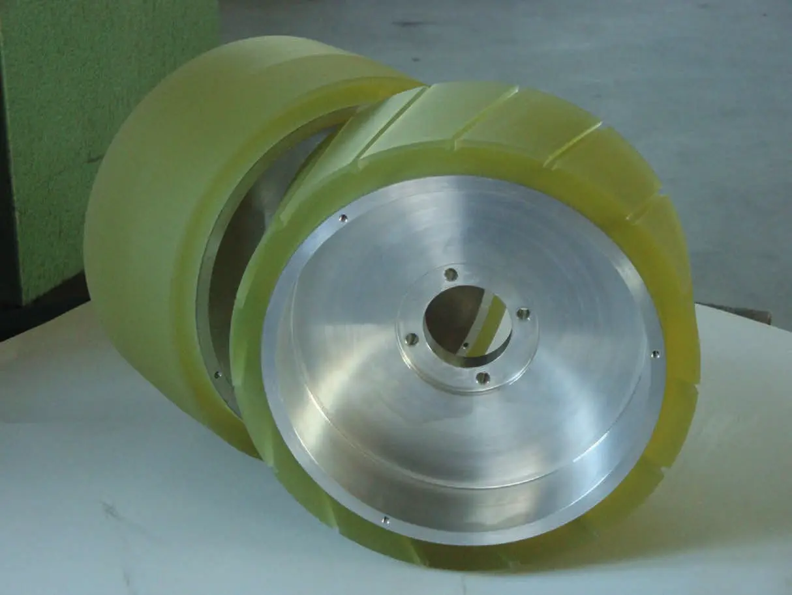
PublireportageClaude Piguet SA – Leader du polyuréthane
Une PME familiale de Grandson spécialiste du polyuréthane
CEFNA – Centre de formation neuchâtelois pour adultes – Innovation & expertise
Formations horlogères modulaires pour adultes
 Publireportage
PublireportageCodere SA – Le spécialiste du traitement thermique
Codere SA – The heat treatment specialist
BECS Sàrl – Un service global pour le secteur horloger
BECS Sàrl – A global service for the watchmaking sector
 Publireportage
PublireportageDécotech SA – L'entrée dans l'âge du laser
Décoration de mouvements et galvanoplastie à La Chaux-de-Fonds
 Publireportage
PublireportageCyberis SA – La réactivité comme carte de visite
Décolletage de précision à Bassecourt
 Publireportage
PublireportageGS Time Dongio – L'assistenza tecnica e la flessibilità come punti di forza
Assemblage de montres Swiss made au Tessin
Greub Machines SA – Pour trouver votre machine, neuve ou d'occasion
Greub Machines SA – Find your machine, new or second hand
Inhotec SA : l'usinage de précision au service des grandes marques horlogères
Nouveaux équipements et nouvelles prestations en 2017-2018
 Publireportage
PublireportageHorlyne SA – Virtuose du décor en mouvement depuis 1978
Masses oscillantes, guillochage, gravure et sertissage
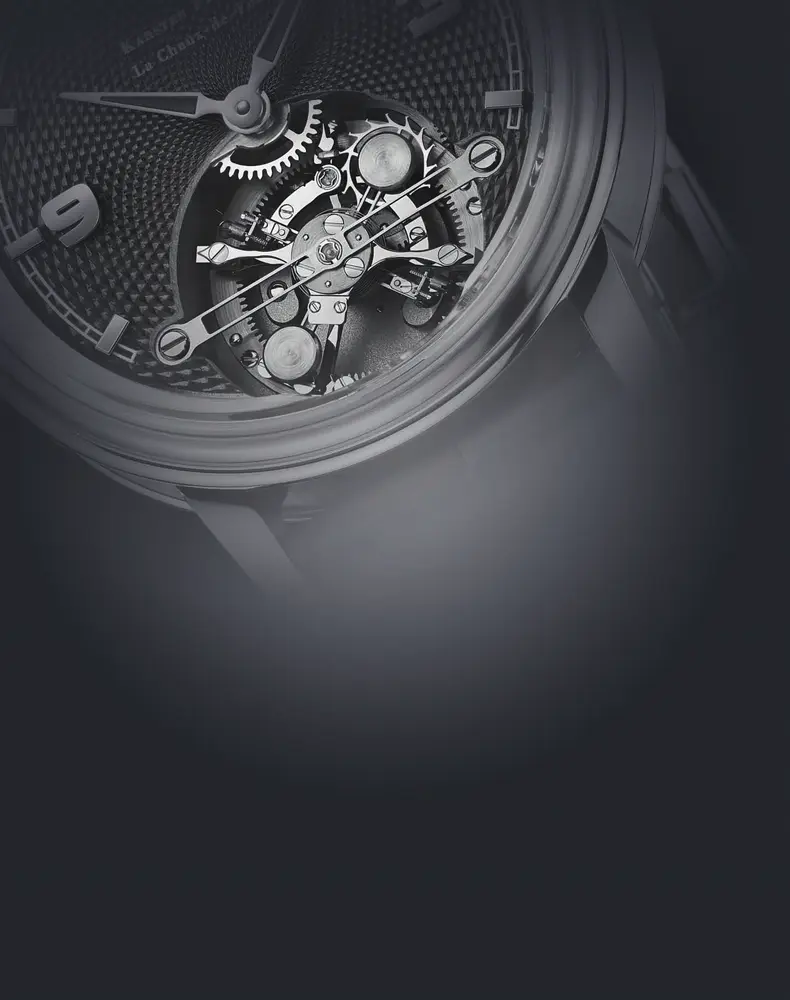
PublireportageJoseph Baume SA – L'expérience au service de l'étampage
Composants étampés pour l'habillage horloger au Noirmont
Ryf AG – Entretien avec Daniel Ryf, propriétaire et directeur
« Chez nous, la numérisation a commencé il y a plus de 20 ans »
La Pierrette SA – La référence en pierres d'horlogerie
Pierres en rubis et saphir pour les mouvements
Monnier SA, électroplastie et décoration – Un interlocuteur pour de multiples prestations
Galvanoplastie et décoration horlogère à La Chaux-de-Fonds
 Publireportage
PublireportageProductec SA – Optimiser la chaîne numérique dans vos ateliers
Productec SA – Optimising the digital chain in your workshops
 Publireportage
PublireportageKIF Parechoc SA – De l'antichoc au décolletage de précision
Composants de mouvements mécaniques à la Vallée de Joux
OESCH GmbH – Boucles, fermoirs, barrettes et charnières en acier inox
OESCH GmbH – Buckles, clasps, spring bars and hinges in stainless steel
STL Swiss SA – Le spécialiste du bracelet métallique 100 % suisse
STL Swiss SA – The 100% Swiss metal strap specialist
 Publireportage
PublireportageWitech SA – Machines-outils compactes et précises
Machines d'usinage de un à cinq axes à Bassecourt
Transcendance Sàrl – Les jeunes artisans de la décoration
Décoration horlogère haut de gamme au Sentier
 Publireportage
PublireportageBroquet Décolletage SA – Le spécialiste du décolletage d'horlogerie haut de gamme
Micropièces décolletées à Bévilard
PublireportageBeauregard Manufacture SA – L'expérience et de vastes compétences au service de l'horlogerie
Boîtes de montres en métaux précieux et composants
Giroud SA – Précieux auxiliaires pour l'horlogerie et l'industrie des machines
Tables coulissantes de précision et potences de chassage
Joseph Bonvallat SA – Votre partenaire depuis 1937
Galvanoplastie, décoration et polissage à Porrentruy
 Publireportage
PublireportageBryek Horlogerie Sàrl – Un spécialiste du terminage T2
Assemblage de montres mécaniques et à quartz
 Publireportage
PublireportageWenk SA – Le spécialiste des machines-outils
Importation, vente et service de machines-outils CNC
 Interview
InterviewUn territoire reconnu pour son bilinguisme, ses infrastructures et son excellence horlogère
Interview de Philippe Chételat, préfet de Bienne
InterviewHIV Sektion Biel-Seeland
Im Gespräch mit Fabian Engel, Präsident HIV Sektion Biel-Seeland
 Interview
InterviewStandortförderung Kanton Bern – Kanton Bern, ein innovativer, breit diversifizierter Standort
Interview mit Dr. Sebastian Friess, Leiter Standortförderung Kanton Bern
InterviewSektion Emmental
Interview mit Walter Gerber, Präsident HIV Sektion Emmental
 Interview
InterviewStadt Biel – « Unsere Stadt befindet sich seit Jahren in einer sehr dynamischen Phase »
Interview mit Thomas Gfeller, Delegierter für Wirtschaft der Stadt Biel
InterviewVerband WIRTSCHAFT THUN OBERLAND – « Im Raum Thun hat sich einer der bedeutendsten Industriecluster herausgebildet »
Interview mit Reto Heiz, Präsident
 Interview
InterviewUniversität Bern – Die Universität Bern folgt der Vision « Wissen schafft Wert »
Interview mit Prof. Dr. Christian Leumann, Rektor der Universität Bern
InterviewWVO Wirtschaftsverband Oberaargau
Interview mit Béatrice Lüthi, Präsidentin WVO
 Publireportage
PublireportageUn graveur au service de l'horlogerie
A 115 Gravures S.A.
PublireportageProximité et réactivité au service du recrutement / Nähe und Reaktionsfähigkeit bei der Personalvermittlung
A à Z emplois SA – A bis Z Stellen AG
 Publireportage
PublireportageVotre partenaire pour le traitement de l'eau / Ihr Partner für die Wasseraufbereitung
Alpha Wassertechnik AG
InterviewEspace Real Estate – Interview mit Lars Egger, Vorsitzender der Geschäftsleitung
 Publireportage
PublireportagePrécision et qualité
ETAMECA SA
Interview« Der Standort Biel/Bienne ist sehr interessant für HARTING »
Interview mit Susanne Giehl, Geschäftsführerin
 Publireportage
PublireportageDeux têtes valent mieux qu'une / Zwei Köpfe sind besser als einer
Gymnase français de Bienne
 Interview
Interview« We prepare our students for life beyond school »
Interview with Ms Denise Coates, Director – International School of Berne
 Interview
InterviewNMS Bern – « Lernende ganzheitlich fördern und fordern »
Interview Annette Geissbühler, Direktorin
 Interview
InterviewRevisia AG – Im Gespräch mit Christoph Schütz / Entretien avec Christoph Schütz
 Interview
InterviewJean-Daniel Pasche, le représentant du savoir-faire helvétique
Entretien avec le Président de la Fédération de l'industrie horlogère suisse FH
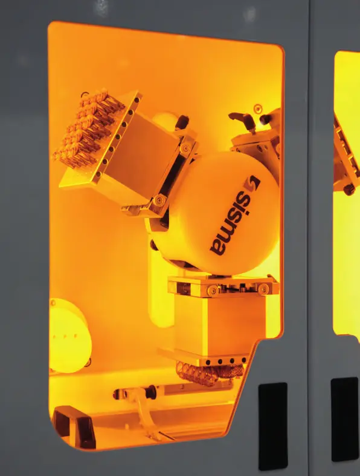
InterviewLe salon EPHJ-EPMT-SMT à Palexpo Genève du 20 au 23 juin 2017
Entretien avec Alexandre Catton, chef de projet du salon EPHJ-EPMT-SMT
L'ASRH au carrefour de la recherche – Quand les horlogers mutualisent les coûts
Entretien avec Fabienne Marquis Weible, directrice
 Publireportage
PublireportageTEC Ebauches SA – Du composant jusqu'au mouvement
Fournisseur d'ébauches et de composants pour la haute horlogerie
PublireportageTEC Arts HD – Le water transfer printing adapté à l'horlogerie
Une technique de décoration par immersion au service des composants horlogers
 Publireportage
PublireportagePosalux SA – L'expert des micro-technologies et du micro-usinage de précision
Posalux SA – The micro technology and precision micro machining expert
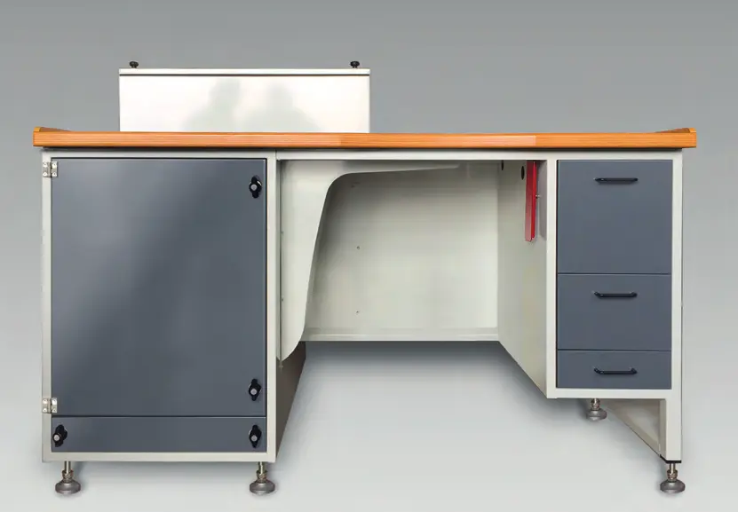
PublireportageTechnoFinish SA – La fiabilité suisse à votre service depuis 2003
Machines et consommables de polissage pour l'horlogerie et la bijouterie
TechnoFormage SA – Des solutions pour l'emballage thermoformé et injecté
Conditionnements Swiss made pour les pièces de montres terminées
 Publireportage
PublireportageClaude Piguet SA – Leader du polyuréthane
Une PME familiale de Grandson aux compétences uniques dans le polyuréthane
Inhotec SA : l'usinage de précision au service des grandes marques horlogères
Fraisage CNC et électroérosion à fil au Locle
Aiguilla SA, seconde après seconde... Un maître du ballet des aiguilles
Aiguilla SA, second after second... Mastering the whirl of watch hands
 Publireportage
PublireportageNGL Cleaning Technology SA – Ecological cleaning solutions
Produits de nettoyage industriel à base aqueuse
Rimann AG – Entretien avec Stefan Eichler, PDG
Machines de lavage des copeaux de métaux précieux
 Publireportage
PublireportageAROLA - Alfred Rochat & Fils SA – Le défi du temps
Mouvements, modules et complications aux Bioux
Chatelain Prototypes Sàrl – Les spécialistes du prototypage
Prototypes, petites séries et potences pour l'horlogerie
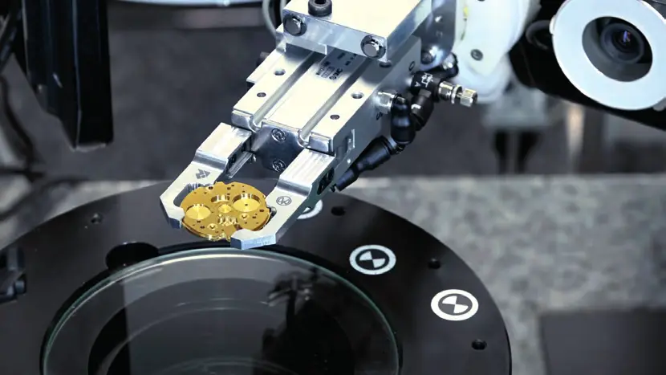
PublireportageROLLOMATIC SA – L'excellence technologique au service de l'industrie
Machines de haute précision et robotique collaborative
 Publireportage
PublireportageJean Singer & Cie SA – Un cadranier d'excellence
Fabrication de cadrans soignés à La Chaux-de-Fonds
 Publireportage
PublireportagePauli Uhrenservice SA – Là où le temps ne s'est pas arrêté
Montage, mécanismes et réparation à Lengnau
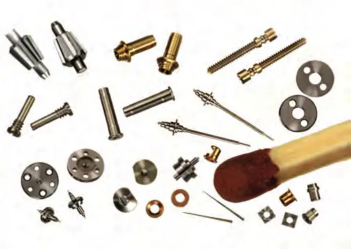
PublireportageBroquet Décolletage SA – Usiner l'infiniment précis
Décolletage de micropièces pour la haute horlogerie à Bévilard
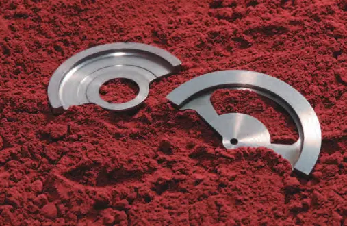
InterviewMeyer Sintermetall – La métallurgie des poudres
Entretien avec Christoph Meyer
Monnier SA, électroplastie et décoration – Une offre sans cesse élargie
Galvanoplastie et décoration horlogère à La Chaux-de-Fonds
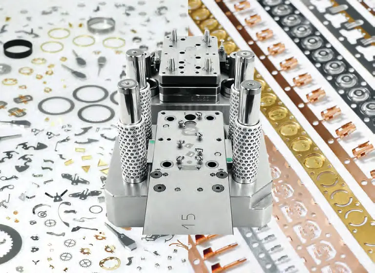
PublireportageMeylan Frères SA – Experts de l'étampage progressif
Micro-pièces étampées au Brassus
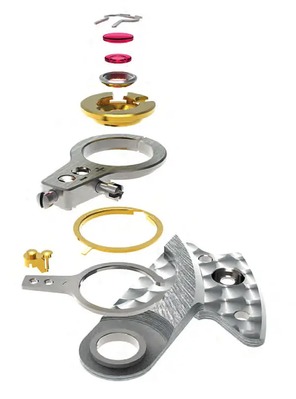
PublireportageKIF Parechoc SA – Votre partenaire dans l'art de la précision
Composants de mouvements mécaniques à la Vallée de Joux
A. Aubry AG – 40 ans de savoir-faire dans l'industrie des plastiques
A. Aubry AG – 40 years of expertise in the plastics industry
 Publireportage
PublireportageMatthey Décolletages SA – Une référence de la précision
Cercles d'emboîtage, réhauts et composants de mouvement
Décotech SA – La quête de l'esthétisme
Entretien avec Patrick Baumgartner, directeur général
 Publireportage
PublireportageCendres+Métaux – Un alliage de compétences pointues et de visions innovantes
Cendres+Métaux – An alloy of highly developed skills and innovative visions
 Publireportage
PublireportageMCH SA – Mouvements et complications horlogers
Service après-vente, reconditionnement et emboîtage
 Interview
InterviewERMA Boécourt SA – Précision extrême et transparence hors normes
Entretien avec Patrick Vernier, CEO et directeur technique
CHH Microtechnique – Le nouveau pôle industriel haut de gamme de la Vallée de Joux
Entretien avec Fabrice Schneider, directeur
 Publireportage
PublireportageEcometal et son service global – Les spécialistes du traitement des métaux précieux
Récupération, fonderie et analyse de métaux précieux au Tessin
La Pierrette SA – La référence en pierres d'horlogerie
Pierres en rubis et saphir pour les mouvements
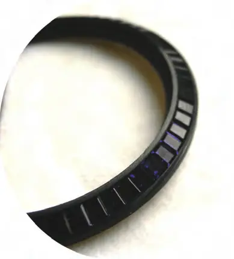
InterviewGil Sertissage SA – À la pointe du sertissage et du développement de techniques inédites depuis trente ans
Entretien avec Alexandre Gil, directeur
OESCH GmbH – Spécialiste des boucles, fermoirs et accessoires en acier
OESCH GmbH – Specialist in buckles, deployment buckles and (stainless steel) accessories
 Interview
InterviewNeuenschwander Composants Horlogers SA – Maître d'œuvre depuis 1989
Corine Neuenschwander, directrice, répond à nos questions
Ryf AG, Granges – « La qualité est notre passion »
Entretien avec Daniel Ryf, propriétaire et directeur
Une ville incontournable
Entretien avec M. Grégoire Junod, syndic, en charge de la Culture et du Développement urbain
Investir pour faire du développement un atout
Entretien avec Mme Florence Germond, municipale en charge des Finances et de la Mobilité
« Une autre façon d'habiter est en marche ! »
Entretien avec Mme Natacha Litzistorf, municipale en charge du Logement, de l'Environnement et de l'Architecture
« Nous nous positionnons à la pointe d'une thématique vitale »
Entretien avec M. Pierre-Antoine Hildbrand, municipal en charge de l'Economie et de la Sécurité
Vers une vi(ll)e toujours plus verte
Entretien avec M. Jean-Yves Pidoux, municipal en charge des Services industriels
Chaque voix doit être impliquée
Entretien avec M. David Payot, municipal en charge de l'Enfance, de la Jeunesse et des Quartiers
Lausanne en forme olympique
Entretien avec M. Oscar Tosato, municipal en charge des Sports et de la Cohésion sociale
Devenir une ville à la mode pour les escapades d'un week-end
Entretien avec M. Steeve Pasche, directeur de Lausanne Tourisme
 Publireportage
PublireportageA Carré Architecture & Aménagement SA – L'activité architecture
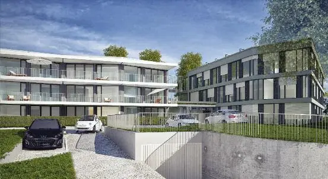
PublireportageA Carré SA – L'activité de la société de développement
 Publireportage
PublireportageAF Toscano SA
AGROLA AG – « AGROLA betreibt das zweitgrösste Tankstellennetz der Schweiz »
Interview mit Alexander Streitzig, Vorsitzender der Geschäftsleitung
 Publireportage
PublireportageApleona HSG SA – Realising potential
BG Ingénieurs Conseils – Bâtir un cadre de vie durable
BG Consulting Engineers – Building a sustainable living environment
Biopôle – Plus qu'un parc scientifique, une communauté dynamique dans le domaine des sciences de la vie
Biopôle – More than a science park: a vibrant life science community
B+C Ingénieurs SA – « Des prestations pluridisciplinaires au service du territoire »
Centre d'Imagerie Biomédicale – CIBM : une structure de recherche ouverte et ambitieuse en imagerie biomédicale
CIFER Centre de formation – Valoriser le métier d'électricien de réseau
Enhancing the status of the power network electrician
CRIDEC, l'issue pour vos déchets spéciaux et vos analyses
Savoir-faire, proximité et éthique environnementale
D.E.S. Systèmes de sécurité SA – Notre passion, votre sécurité
Our passion, your safety
EDIFEA SA – Des solutions constructives pour particuliers et professionnels
Constructive solutions for private individuals and professionals
Effitec SA – Pour un contrôle électrique sûr et efficace
For reliable and efficient electrical inspections
Ecole Nouvelle de la Suisse Romande – ENSR
Ferring International Center SA
Une vision globale par Michel Pettigrew ; un aperçu de notre science par Per Falk
GETAG Entsorgungs-Technik AG / GETAG Romandie SA
Im Gespräch mit Geschäftsführer Yvan Grepper / Entretien avec Yvan Grepper, PDG
Kummler+Matter SA

GUYOT | Architectes
La Haute Ecole de Santé Vaud au cœur de la cité – Affûtée pour relever les défis du 21e siècle
Entretien avec Mme Mireille Clerc, directrice de HESAV
Kälin & Associés SA – L'ouverture comme philosophie
LHC – Lausanne Hospitality Consulting : l'excellence suisse qui fascine le monde
Swiss excellence around the world
Montangero & Fils SA – Une dynastie de plâtriers-peintres
Novotel Lausanne Bussigny
Innovation « made in Switzerland » – Un test sanguin pour la détection précoce du cancer colorectal
Novigenix SA
OFISA Informatique – Pour une stratégie centrée sur l'humain
Online Automation SA – Fournisseur de solutions pour l'industrie
Orion Assurance de Protection Juridique SA – Un allié pour faire valoir ses droits
Interview de Me Sébastien Piu, responsable juridique des prestations externes pour la Romandie
 Publireportage
Publireportagesrg | engineering – Votre partenaire CVSE en Suisse romande
Your engineering partner in French-speaking Switzerland
S. Roubaty SA : toujours une longueur d'avance
Transports de la région Morges - Bière - Cossonay SA
 Publireportage
PublireportageTEKHNE
tl, un acteur essentiel du développement – Les grands chantiers de la mobilité
Entretien avec M. Michel Joye, directeur des tl
 Publireportage
PublireportageTransElec – Optez pour le constat d'état avant travaux !
Wonderware SA (Switzerland) – Donner les moyens aux Hommes de transformer leur entreprise
Giving mankind the means to transform companies
 Interview
InterviewLes défis de l’économie vaudoise
Interview du conseiller d’Etat Philippe Leuba
 Interview
InterviewPour une fiscalité allégée et la libre circulation des personnes
Interview de Claudine Amstein, Directrice de la Chambre Vaudoise du Commerce et de l’Industrie (CVCI)
« Il faut déployer davantage d’énergie pour obtenir des résultats »
Le service de la promotion économique et du commerce – Rencontre avec Lionel Eperon
 Interview
InterviewLa Caisse cantonale vaudoise de compensation AVS
Interview de Fabienne Goetzinger, Directrice de la Caisse cantonale vaudoise de compensation AVS/AI
 Publireportage
Publireportagechenevartarchitecte – Une architecture d’intégration
Publireportage
 Publireportage
PublireportageCentre d’Etudes et de Transferts Technologiques de la HEIG-VD – CeTT
Un facilitateur entre le milieu académique et l’économie (français et anglais)
 Publireportage
PublireportageÉcole Minerva – Un acteur reconnu de la formation paramédicale
Publireportage
 Publireportage
Publireportagede Rham Immobilier – La solidité et le dynamisme
Publireportage
 Publireportage
PublireportageEMCH+Berger SA Lausanne – Le goût des projets de grande envergure et complexes
Publireportage
 Publireportage
PublireportageEcole Internationale GEMS World Academy-Etoy – Des élèves équilibrés au service de la communauté
Balanced students who give back to the community (français et anglais)
 Publireportage
PublireportageHESAV – Haute Ecole de Santé Vaud : un acteur dynamique du système de soins et de la formation
A dynamic player in the healthcare and training system (français et anglais)
 Interview
InterviewLa HEP Vaud, au cœur du tissu universitaire – Enseignant, un métier toujours plus recherché
Entretien avec son recteur, M. Guillaume Vanhulst (français et anglais)
 Publireportage
PublireportageHenri Badoux SA – La tradition innovative au service du vin
Innovative Tradition im Dienste des Weines (français et allemand)
 Publireportage
PublireportageL’institut de génie thermique (IGT) – L’énergie comme défi du futur
Energy – the challenge of the future (français et anglais)
Institut fédéral des hautes études en formation professionnelle IFFP – Des contacts étroits avec les partenaires de la formation professionnelle
Un entretien avec le Prof. Dr Alexandre Étienne, Directeur suppléant de l’IFFP, Directeur régional du site de Lausanne
 Interview
InterviewL’Interprofession du Gruyère – Gardien d’une emblématique tradition de qualité
Die Sortenorganisation Gruyère AOP – Interview de Philippe Bardet (français et allemand)
 Publireportage
PublireportageMontangero & Fils SA – Une dynastie de plâtriers-peintres
Publireportage
 Publireportage
PublireportageTransports de la région Morges Bière Cossonay SA – MBC SA : au service de la mobilité régionale
Publireportage
 Publireportage
PublireportagePort-Franc et Entrepôts de Lausanne – Chavornay – PESA SA
Des vœux dans le monde entier / Shipping throughout the world (français et anglais)
 Interview
InterviewLe Nyon - St-Cergue - NStCM – Une ligne de chemin de fer unique pour une région riche en couleurs
Entretien avec Richard Zaugg, directeur (français et allemand)
InterviewTransports publics de la région nyonnaise - TPN SA – Une offre de qualité pour voyager en toute liberté
Ein hochwertiges und flexibles Angebot (français et allemand)
 Publireportage
PublireportageInstitut Suisse de la Soudure - SWI – Une soudure ne se vérifie pas, elle se valide !
Welding isn’t verified, it’s validated! (français et anglais)
 Publireportage
PublireportageTekhne SA – Le spécialiste des projets complexes
Publireportage
 Interview
InterviewVaudoise Assurances – L’esprit mutualiste au service du marché suisse
Interview de Philippe Hebeisen, Directeur général, CEO
Infra Suisse – Interview mit Matthias Forster, Geschäftsführer
L’association faîtière des constructeurs d’infrastructures
Les prestations d’ingénieurs sont des services intellectuels, pas des marchandises
Interview de Mario Marti, Secrétaire général de l’usic
VSS – Schweizerischer Verband der Strassen- und Verkehrsfachleute
Interview mit Dr. Dieter Wepf, Präsident
bauenschweiz – Interview mit Direktor Dr. Benjamin Wittwer
La faîtière de l’économie suisse de la construction
Transitec, ingénieurs-conseils – Un bureau d’études généraliste dans le domaine de la mobilité
Le plus ancien bureau suisse spécialisé en mobilité
 Dossier
DossierA13 Circonvallazione di Roveredo
Travaux routiers et autoroutiers
DossierA9 Sion et environs
Travaux de réfection entre Vétroz et Uvrier
DossierA9 Simplon
Remise en état progressive de la route du col
DossierA5 Colombier - Cornaux
Assainissement de l’autoroute à travers l’agglomération de Neuchâtel
 Dossier
DossierModernizzazione delle infrastrutture ferroviarie del Gambarogno
Automatisation de la ligne Bellinzone–Luino
DossierBern Ost: Verkürzung der Zugfolgezeit
Deux minutes d’intervalle entre Wankdorf et Berne
DossierFMV: Ferrovia Mendrisio-Stabio-Varese e Malpensa
Nouvelle liaison ferroviaire transfrontalière
DossierGümligen-Thun: Verkürzung Zugfolgezeiten
Programme ZEB entre Berne et Thoune
 Dossier
DossierMartigny : extension des quais et adaptation des voies
Modernisation de la gare de Martigny
DossierLéman 2030 - Nœud de Genève Mies-Chambésy
Vers la cadence au quart d’heure entre Coppet et Genève
DossierBellinzona-Giubiasco prolungamento del binario 36
Une troisième voie sur l’axe du Saint-Gothard
 Interview
InterviewRothpletz, Lienhard + Cie AG
Interview mit Werner Kradolfer und Alex Veigl / Entretien avec Werner Kradolfer et Alex Veigl
 Interview
InterviewTPN - Transports publics de la région nyonnaise SA : accompagner l’essor d’une région
Entretien avec M. Richard Zaugg, directeur des TPN
 Interview
InterviewTransN, Transports Publics Neuchâtelois SA – Des sauts qualitatifs importants
Entretien avec M. Pascal Vuilleumier, directeur de transN
 Publireportage
PublireportageAJS ingénieurs civils SA – Ensemble, façonnons un avenir audacieux
Portrait par M. David Quesada, sous-directeur
 Interview
InterviewDiggelmann + Partner AG
Interview mit Mitinhaber und Co-Geschäftsleiter Martin Diggelmann
 Publireportage
PublireportageFART, Ferrovie Autolinee Regionali Ticinesi SA – Professionalità per affrontare nuove sfide
Neue Herausforderungen professionell angehen
 Publireportage
PublireportageFratelli Censi SA di Grono – Da 65 anni su binari sicuri
Seit 65 Jahren auf sicheren Gleisen
 Publireportage
PublireportageMonod-Piguet + Associés Ingénieurs Conseils SA – Le goût des projets complexes
Ingénierie des structures, des infrastructures et planification générale
 Publireportage
PublireportageNorbert SA – Géologie de l’ingénieur et hydrogéologie
Une lecture détaillée du sous-sol pour les grands chantiers romands
PublireportageLe chemin de fer Nyon - St-Cergue - Morez SA – La colonne vertébrale du district
Das Rückgrat der Region
 Publireportage
PublireportageAnastasi & Partners SA – Continuità nel solco del passato
Un bureau d’ingénieurs tessinois fête ses trente ans
PublireportageBernasconi e Forrer Ingegneria e misurazioni SA – Quando ogni millimetro ha valore
Géomètres du Ceneri et du second tube du Gothard
 Publireportage
PublireportageBonalumi e Ferrari SA di Giubiasco – Uno studio d’ingegneria attivo dal 1987
Statique, hydraulique, acoustique et trafic
Ecoscan SA – Le spécialiste des études en environnement
Plus de 2000 projets environnementaux en Romandie
Laboroute SA – Un laboratoire de pointe au service de la construction routière
Béton, granulats et enrobés bitumineux
 Publireportage
PublireportageMarcionelli & Winkler + Partners SA – Raccontare una storia di un’azienda
mawi, ingegneri civili e pianificatori
 Publireportage
PublireportagePaler SA, specialista dei lavori del sottosuolo – Àncora la vostra sicurezza
Fondations spéciales et géotechnique
RGR Ingénieurs Conseils SA – Gérer le trafic autoroutier, un enjeu majeur pour la mobilité
Robert-Grandpierre & Rapp SA
 Publireportage
PublireportageSPALU SA, in attività dal 1933 – Quattro generazioni di impresari costruttori
Revêtements routiers, étanchéité et génie civil à Lugano
 Publireportage
PublireportageTrasporti Pubblici Luganesi SA – Si alza il sipario sulla nuova funicolare
Le funiculaire Piazza Cioccaro – gare CFF de Lugano
Hygin Debons – Serrurerie, construction métallique
Dispositifs routiers, parois antibruit et ouvrages métalliques
Klemmfix (Schweiz) AG – Ihr Partner für Signalisation, Markierung und Winterdienstprodukte
Technique de la circulation
 Interview
InterviewPoseidon Engineering SA, Geophysical Surveys
Extensive geognostic characterisation for all types of terrain
PublireportageRésonance Ingénieurs-Conseils SA – Notre spécialisation fait la différence
Génie parasismique, sismologie et vibrations
 Interview
InterviewJean-Daniel Pasche, l'autorité horlogère suprême
Défendre l'industrie horlogère, l'un des plus importants piliers économiques de la Suisse
 Interview
InterviewLe Salon EPHJ-EPMT-SMT à Palexpo du 14 au 17 juin 2016
Interview de Barthélémy Martin, Marcello Ronchietto, André Colard et Olivier Saenger
 Interview
InterviewConvention patronale de l'industrie horlogère suisse (CP) : « Nous avons besoin de plus d'apprentis et d'entreprises qui créent de l'emploi »
Entretien avec Elisabeth Zölch, Présidente de la CP
 Interview
InterviewL'apiah au cœur du monde horloger – Une association patronale très active
Entretien avec Marie-Thérèse Kohler Fiorellino, Secrétaire générale
 Interview
InterviewWAG, trois lettres horlogères, une galerie et... un label ?
Interview de Philippe Sitbon
 Interview
InterviewSIWP : le Casino de Genève s'ouvre aux horlogers indépendants
Interview d'Amarildo Pilo, fondateur du SIWP
 Portrait
PortraitSwissCreativeLab, groupement de marques indépendantes
Portrait de Carlo Enea Naldi
 Publireportage
PublireportageComposites Busch SA – Le carbone au service de l'industrie horlogère
 Publireportage
PublireportageSurcotec SA / Syvaco Sàrl – Leaders du traitement de surface sous vide
 Publireportage
PublireportageGilbert Petit-Jean SA – Une équipe au service de la qualité
Gilbert Petit-Jean SA – Ein Team ganz im Dienst der Schweizer Qualität
 Publireportage
PublireportageInhotec SA : l'usinage de précision au service des grandes marques horlogères
 Publireportage
PublireportageBates, la référence des consommables pour le polissage
 Publireportage
PublireportageUM2 SA – Précision extrême, qualité hors normes
Hagmann Tec SA
Flux laminaire, lavage, emballage et sous-traitance
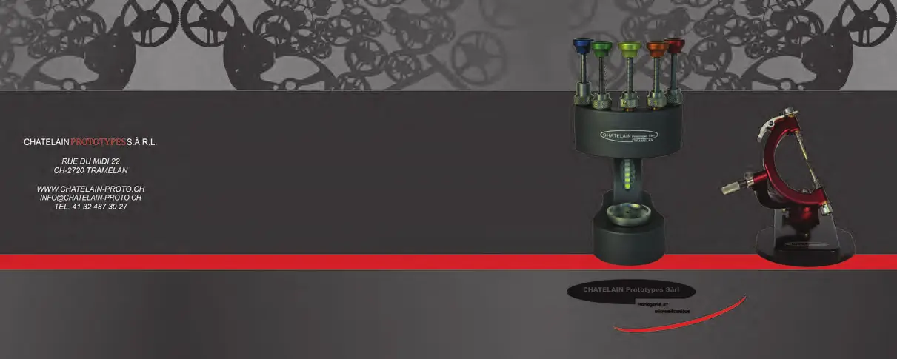
PublireportageChatelain Prototypes Sàrl – Les spécialistes du prototypage
 Publireportage
PublireportageAgosi Allgemeine Suisse SA – 125 ans d'expérience à votre service
Écouter – Comprendre – Apporter des solutions
 Publireportage
PublireportagePosalux SA – L'expert des micro-technologies et du micro-usinage de précision
Posalux SA – The micro technology and precision micro machining expert
 Publireportage
PublireportageTechnoFinish SA – La fiabilité suisse à votre service depuis 2003
PublireportageTechnoFormage SA – Des solutions pour l'emballage thermoformé et injecté
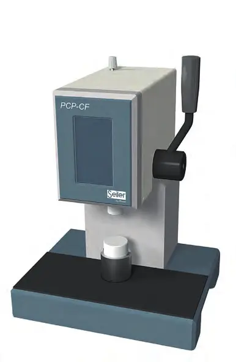
PublireportageRoxer SA – Le spécialiste et fabricant suisse de machines de test d'étanchéité de montres et d'outils horlogers
The Swiss specialist and manufacturer of leak testing machines for watches and watchmaking tools
Claude Piguet SA – Le spécialiste du moulage et de l'usinage de polyuréthane
Specialists in the moulding and machining of polyurethane
Luthy Machines SA – Le spécialiste des machines pour l'industrie horlogère
Luthy Machines SA – The machine specialist for the watchmaking industry
 Publireportage
PublireportageAstuto Sàrl
Le spécialiste des machines à remonter les montres automatiques
PublireportageGEPY, la précision en mouvement
Une référence pour les quills et pointes tournantes
 Publireportage
PublireportageAiguilla SA, seconde après seconde... un maître du ballet des aiguilles
Aiguilla SA, second after second... mastering the whirl of watch hands
 Publireportage
PublireportageMercier SA – Horlogers de l'ombre
PublireportagePauli Uhrenservice AG – Wo die Zeit nicht stehen geblieben ist
 Interview
InterviewMeyer Sintermetall – La métallurgie des poudres
 Publireportage
PublireportageMonnier SA – Électroplastie et décoration, une offre constamment enrichie
 Publireportage
PublireportageSaphirwerk – Des solutions pour les matériaux durs
 Publireportage
PublireportageWatch-Déco Sàrl – Le partenaire des terminaisons et du poli bloqué
PublireportageProdécor VD SA – Le spécialiste de la décoration horlogère haut de gamme
PublireportageZürcher Frères SA – Maître de la métallurgie des poudres
 Publireportage
PublireportageArteCad SA – Tous les savoir-faire sous le même toit
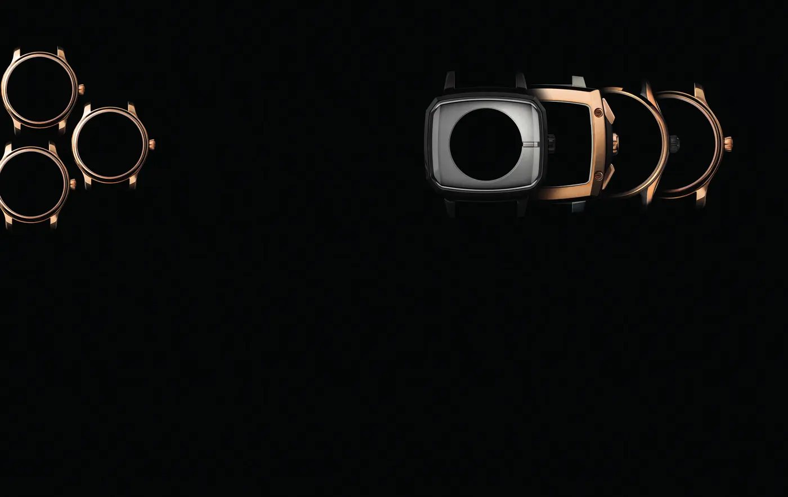
PublireportageGuillod Gunther – De la main à la machine
Acteur historique de la sous-traitance horlogère depuis 1866
 Publireportage
PublireportageLes Artisans Boîtiers SA – Tradition, technologie et savoir-faire artisanal
Tradition, technology and skilled craftsmanship
 Publireportage
PublireportageQueloz SA – L'habillement horloger à son plus haut niveau
Queloz SA – The height of watch accessories
 Publireportage
PublireportageStettler Sapphire – La parfaite transparence
Stettler Sapphire – Perfect clarity
 Publireportage
PublireportageBrasport, 70 ans d'expérience – Le bracelet cuir, mode excellence
PublireportageOesch GmbH – Spécialiste des boucles, fermoirs et accessoires depuis 30 ans
Specialising in buckles, clasps and accessories for the last 30 years
 Publireportage
PublireportageBanda Swiss – Manufacturer of High Quality Leather Watch Straps
 Publireportage
PublireportageCompétences pointues pour le Centre de Technologies Microtechniques SA
 Publireportage
PublireportageEtampes Kaufmann SA – Le spécialiste de l'étampage et du découpage
 Publireportage
PublireportageDécors Guillochés SA – L'art du guillochage au service de l'horlogerie
 Publireportage
PublireportageMW Programmation SA – Pilotes pour commandes numériques
 Publireportage
PublireportagePierre Bercher SA – Le spécialiste de l'injection de plastique
The plastic injection specialist
Maître Frères SA
Injection plastique, Glovelier
Le ceff INDUSTRIE, la formation à la carte pour les jeunes générations
Centre de formation professionnelle Berne francophone, Saint-Imier
CEFNA, votre partenaire formation
Formation des adultes dans le canton de Neuchâtel
Centre interrégional de perfectionnement CIP – Au cœur de la passion horlogère
Formation pour adultes à Tramelan
CEJEF - Division technique : quatre niches de formation au cœur d'une région industrielle
Centre jurassien d'enseignement et de formation, Porrentruy
CFH : formation de pointe conforme aux attentes du marché
Centre de Formation dans le domaine de l'Horlogerie – Antonio Ciancio et Sébastien Monney
Centre interrégional de formation des montagnes neuchâteloises – CIFOM : pour savoir vivre avec savoir-faire
Formation professionnelle et continue
Ecole technique de la Vallée de Joux - ETVJ
Une offre de formation en contact avec les réalités du terrain
Haute École Arc Ingénierie – Formation et recherche appliquée au service de l'Arc jurassien
Avec Olivier Duvanel, directeur adjoint
WOSTEP – Un demi-siècle de formation horlogère suisse à l'étranger
Fondation pour la formation et le perfectionnement horlogers
Roud'hor, la passion du rouage dédiée à la Haute Horlogerie
Avec Olivier Roudeau, fondateur et président
STS Saulcy Traitement de Surface SA – Des professionnels à votre service
Entretien avec Frédéric Saulcy, directeur général
TSM Compagnie d'Assurances – Partenaire historique des horlogers
Orfèvre en assurances depuis 1921 – entretien avec Édouard Fragnière, CEO
Altmann Casting AG – Fonte de précision et 3D printing
Andreas Altmann, propriétaire et président
Blösch SA - Mérusa® : le futur du cadran est en train de s'écrire
Avec Peter et Erich Blösch et Patrick Blösch
Décotech SA – Le spécialiste de la décoration de mouvements et des décors personnalisés
La Chaux-de-Fonds
Kyburz & Cie SA – Une réputation d'excellence / Placor, la R&D au service des solutions plastiques
Produits horlogers transparents et bureau d'étude
Econorm Saint-Imier
Interview mit Roland Rhyner, Inhaber
Serge Meister SA – Des outils de précision pour l'industrie du décolletage
Court
Demhosa, décolletage de précision – Du modèle virtuel à la pièce parfaite
Entretien avec Wilfred Zutter (Incabloc) et Sébastien Franz (Demhosa)
KIF Parechoc SA – Votre partenaire dans l'art de la précision
Le Sentier, Vallée de Joux
SAFED Suisse SA – Le spécialiste des installations de traitement thermique
Avec David Salerno, directeur général
IMH SA – Une manufacture complète au service de l'horlogerie
Innovations Manufactures Horlogères, Le Locle
TCI Engineering SA – Le spécialiste romand de l'automatisation industrielle
Penthaz
Procolor LCTI – La tampographie au service de l'horlogerie
Entretien avec Gilles Froidevaux, directeur
Meylan Frères SA – Le spécialiste du découpage progressif
Le Brassus
Bryek Horlogerie Sàrl
Assemblage de montres mécaniques et à quartz, La Chaux-de-Fonds
Rofin-Lasag AG – Des lasers qui vous correspondent
Laserprodukte nach Mass
Diafin SA – Un service personnalisé
Votre partenaire dans le choix et l'achat de diamants depuis 1992
GMG Composants – Le spécialiste des aiguilles et des index de montres
Le Locle
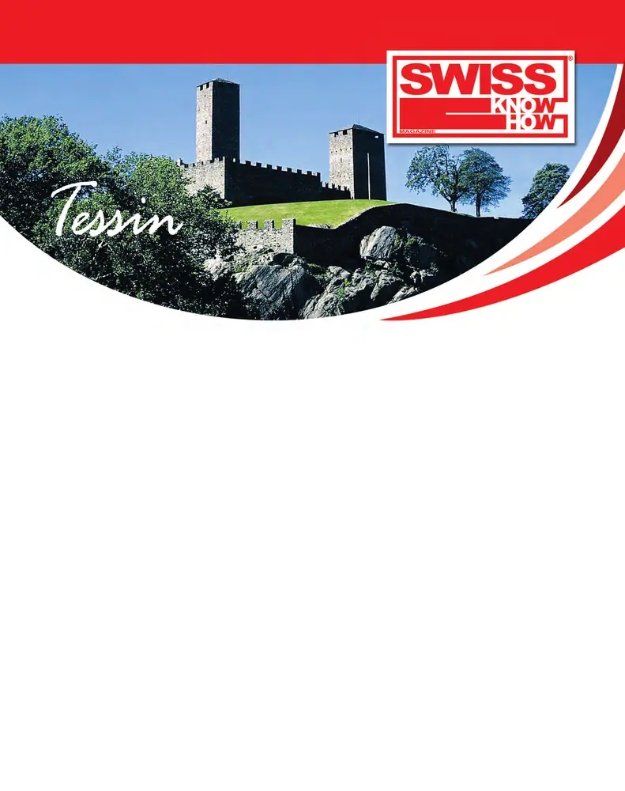
InterviewStadt Solothurn – « Solothurn schaut auf eine äusserst erfreuliche Dekade zurück »
Interview mit Nationalrat Kurt Fluri, Präsident Schweizerischer Städteverband SSV
 Interview
InterviewUn nouvel âge d'or pour la Ville
Entretien avec M. Pierre-Alain Clément, syndic de Fribourg
Accompagner la croissance démographique de Bulle
Interview d'Yves Menoud, syndic de la Ville de Bulle
InterviewDensifier la ville en lui conservant sa qualité de vie
Entretien avec M. Jean Bourgknecht, conseiller communal en charge de l'urbanisme et du génie civil
 Interview
InterviewRenforcer l'attractivité économique de Fribourg
Interview de Chantal Robin, présidente du Groupement industriel du canton de Fribourg (GIF-VFI)
 Interview
InterviewMiser sur la fiscalité, l'innovation-formation et le foncier
Interview d'Alain Riedo, directeur de la Chambre de commerce et d'industrie Fribourg (CCIF)
InterviewAméliorer la mobilité, un enjeu majeur pour Fribourg
Entretien avec M. Thierry Steiert, conseiller communal en charge de la Police locale, de la Mobilité, des Sports et des Services industriels
InterviewDes finances qui se portent bien
Entretien avec Mme Madeleine Genoud-Page, conseillère communale en charge des finances et de la culture
 Interview
InterviewL'hôpital fribourgeois – Le patient au bon endroit, au bon moment
Entretien avec Mme Claudia Käch, directrice générale de l'hôpital fribourgeois
 Interview
InterviewL'Agglomération de Fribourg, une plus-value en matière d'aménagement régional et de mobilité
Interview de Corinne Margalhan-Ferrat, directrice de l'Agglomération de Fribourg
 Interview
InterviewPromouvoir l'IT pour l'énergie et l'environnement
Interview de Christian Meixenberger, président du Cluster IT Valley
InterviewL'école au diapason du développement démographique
Entretien avec Mme Antoinette de Weck, conseillère communale en charge des écoles et de l'action sociale
 Publireportage
PublireportageBDL Architectes – Baumgartner, Diserens, Leroux
Bureau d'architectes à Avenches et Estavayer-le-Lac
 Publireportage
Publireportagechenevartarchitecte – Une architecture d'intégration
Atelier d'architecture et d'espaces bâtis à Fribourg
 Publireportage
PublireportageLa Broye, dynamique et innovatrice – Au cœur de projets audacieux : la COREB
Entretien avec Pierre-André Arm, directeur de la Communauté régionale de la Broye
 Publireportage
PublireportageCSD Ingénieurs SA – Ingénieux par nature
Environnement, construction et énergie
 Publireportage
PublireportageFrigaz SA – Un fournisseur de solutions globales dans le domaine de l'énergie
Interview de Pascal Barras, directeur général (version allemande incluse)
 Publireportage
PublireportageGainerie Moderne SA – L'emballage sur-mesure au service du luxe
Emballages, présentoirs et agencements pour les marques de prestige
 Publireportage
PublireportageGroupe E plus : une offre complète et un conseil de qualité
« Partageons plus que l'énergie » – Dominique Gachoud, directeur général (version allemande incluse)
 Publireportage
PublireportageEnergest Sàrl – Un cerveau pour les bâtiments
Gestion technique du bâtiment à Matran
 Publireportage
PublireportageG. Kolly SA – Un spécialiste reconnu
Véhicules utilitaires et systèmes de pesage (version allemande incluse)
 Publireportage
PublireportageImplenia – Le leader de la construction et des services de construction en Suisse
Implenia Buildings Fribourg
 Publireportage
PublireportageLC Logiciels et Conseils SA – Spécialisé dans l'informatique de gestion
Rencontre avec Dominique Marmy, fondateur de la société
 Publireportage
PublireportageL'Interprofession du Gruyère – Pour la défense du Gruyère AOP
Entretien avec M. Philippe Bardet, directeur
 Publireportage
PublireportagePWP SA – Le spécialiste des pièces pour véhicules utilitaires
Composants de carrosserie à Payerne
 Publireportage
PublireportageMC-monitoring SA – Solution provider for rotating machines
Surveillance des machines tournantes
 Publireportage
PublireportageTransports publics fribourgeois – TPF
Interview de Vincent Ducrot, directeur général (version allemande incluse)
 Publireportage
PublireportageZurich Assurances – L'expert en couverture de risques
L'agence fribourgeoise d'Alexandre Ducrot
 Interview
InterviewStadt Bern – Interview mit Stadtpräsident Alexander Tschäppät
« Bern erbringt als Hauptstadt sozusagen einen Service public für die ganze Schweiz »
Bienne en trois points forts
Interview du maire Erich Fehr
Kanton Bern – Interview mit Volkswirtschaftsdirektor Andreas Rickenbacher
« Punkto Innovation gehören unsere Unternehmen zur Weltspitze »
Des projets ambitieux pour une meilleure qualité de vie
Interview de Barbara Schwickert, directrice des travaux publics, de l'énergie et de l'environnement de la Ville de Bienne
 Interview
InterviewUniversität Bern – Interview mit Prof. Dr. Martin Täuber, Rektor
« Wir bekennen uns zur europäischen Tradition der Volluniversität »
 Interview
InterviewInselspital – Interview mit Holger Baumann, Vorsitzender der Geschäftsleitung
Fusion avec le Spital Netz Bern et masterplan 2060
 Interview
InterviewEMCH Aufzüge AG – Im Gespräch mit Geschäftsführer Bernhard Emch
« Unser Produkt verlangt Swiss Made und Swiss Know-how »
 Interview
InterviewDie Berner Arbeitgeber – Interview mit Uwe E. Jocham, Präsident
« Beschäftigungsfreundliche Rahmenbedingungen schaffen und sichern »
Rendre des services d'excellence aux entreprises
Interview de Thomas Gfeller, délégué à l'économie de la Ville de Bienne
Miser sur des pôles de développement stratégiques
Interview de François Kuonen, directeur du département de l'urbanisme de la Ville de Bienne
 Interview
InterviewDirektion für Bildung, Soziales und Sport der Stadt Bern – Interview mit Franziska Teuscher
« Wir sind nahe bei den Freuden und Sorgen der Stadtberner Bevölkerung »
TREUHAND|SUISSE – Im Gespräch mit Zentralpräsidentin Daniela Schneeberger
L'association suisse des fiduciaires
Une filière bilingue unique en Suisse
Interview de Cédric Némitz, directeur de la formation, de la culture et du sport de la Ville de Bienne
 Publireportage
PublireportageBERNMOBIL – « Die roten Trams und Busse sind zu einem Wahrzeichen der Stadt Bern geworden »
Interview mit Rolf Meyer, Leiter Unternehmenskommunikation (version anglaise incluse)
 Publireportage
PublireportageÉcole Française de Berne – L'excellence pour tous
Entretien avec Gabriel Galice, président de l'École Française de Berne
 Interview
InterviewStadt Solothurn – « Solothurn schaut auf eine äusserst erfreuliche Dekade zurück »
Interview mit Nationalrat Kurt Fluri, Stadtpräsident von Solothurn und Präsident des Schweizerischen Städteverbands
 Interview
InterviewCanton de Genève – Corriger le mal-développement de Genève
Interview d'Antonio Hodgers, conseiller d'Etat chargé du DALE
 Interview
InterviewMeyrin – Développer en restant maîtres
Interview de M. Jean-Marc Devaud, conseiller administratif et maire de la Ville de Meyrin
 Interview
InterviewCarouge – Une qualité de vie à préserver
Interview de Nicolas Walder, conseiller administratif de la Ville de Carouge
 Interview
InterviewPlan-les-Ouates – Commune aux mille visages
Interview de Mme Fabienne Monbaron, conseillère administrative de la ville de Plan-les-Ouates
 Interview
InterviewLancy – Partenaire du développement du canton
Interview de M. François Lance, conseiller administratif de la Ville de Lancy
InterviewLes Vergers, 1er quartier Minergie A de Suisse
Interview de Philippe Maag, chef de projet Vergers à la Ville de Meyrin
DossierMeyrin au centre du dynamisme économique régional
Stratégie économique, grand projet ZIMEYSAVER et Meyrin Economic Forum
 Publireportage
PublireportageAmstein+Walthert Genève SA – Ingénieurs-conseils en technique du bâtiment et consulting
ANSWER SA
Solutions de consolidation de données financières et cybersécurité
Carouge – Vieillir dans les meilleures conditions
Résidence Carouge-Centre et Résidence Les Pervenches
 Publireportage
PublireportageArchi SA dialogue avec l'extérieur
 Publireportage
PublireportageBM Entreprise du bâtiment SA – Expériences et savoir-faire
 Publireportage
PublireportageASDZ Architecture – Carouge Est
Image directrice pour l'îlot du Clos de la Fonderie Sud
 Publireportage
PublireportageAtelier Nord – Aux antipodes d'un schéma à l'infini
 Publireportage
PublireportageLe Comptoir Immobilier à la pointe des prestations
 Publireportage
PublireportageDSSA : études et conception de projets électriques
 Publireportage
PublireportageGastromer – La passion des produits de la mer
 Publireportage
PublireportageGuy A. Bottequin : « La médiation de conflits, un antidote au taylorisme judiciaire »
Hestia Constructions, une entreprise globale
Partn-Air SA – Spécialistes en ventilation
 Publireportage
PublireportageHydrosystem SA – Pros de l'hydraulique et pneumatique
 Publireportage
PublireportageLa magie de l'âme de MeyrinCentre
« Au cœur de vos envies »
 Publireportage
PublireportageMPM facility services SA – Le sérieux qui fait la différence
 Publireportage
PublireportageScholl-Metal SA – Les pros du métal
 Publireportage
PublireportageSGI Ingénierie SA – L'ingénierie en mouvement
 Publireportage
PublireportageS+M Architectes SA – Transcender le nécessaire : maîtrise et solutions innovantes
 Publireportage
PublireportageL'Université Ouvrière de Genève (UOG)
 Interview
InterviewDistrict de Nyon, entre ceps et sapins
Le regard aiguisé du préfet Jean-Pierre Deriaz
 Interview
InterviewL'ARCAM, un outil de développement régional
Entretien avec son président Georges Rime
 Interview
InterviewCossonay, le charme discret du Pied du Jura vaudois
Le syndic veut un développement raisonnable et maîtrisé
DossierComment l'ARCAM prend l'avenir en mains – Des objectifs et des projets
Entretien avec M. Oscar Cherbuin, directeur de l'ARCAM
Nyon – Une ville qui a trouvé sa place
Entretien avec M. Daniel Rossellat, syndic
 Interview
InterviewMorges est une ville heureuse
Interview de Vincent Jaques, syndic de Morges
 Interview
InterviewL'Ensemble Hospitalier de la Côte – Les soins à la portée de tous
Entretien avec le directeur général de l'EHC, M. François Jacot-Descombes
Conseil régional de Nyon – Pour une vie propre entre Genève et Lausanne
Interview de Gérald Cretegny, président du comité de direction de Régionyon
 Interview
InterviewGland, un village devenu ville
Interview du syndic Gérald Cretegny
 Interview
InterviewAubonne, une commune à deux pôles
Interview du syndic Luc-Etienne Rossier
InterviewMorges – Introduire la nature en ville
Interview de Jean-Jacques Aubert, municipal en charge des infrastructures, des énergies et des espaces publics
InterviewAubonne – Développer notre offre de tourisme vert
Interview de Gisèle Burnet, municipale (instruction publique, affaires sociales, petite enfance, culture et tourisme)
Nyon – Maîtriser le développement urbanistique de la Ville
Entretien avec Mme Fabienne Freymond Cantone, municipale en charge de l'urbanisme et des ressources humaines
InterviewGland – Préparer l'arrivée de nouveaux habitants
Interview de Thierry Genoud, municipal en charge des bâtiments et de l'urbanisme
Nyon – Equipements : un retard à rattraper
Entretien avec M. Claude Uldry, conseiller municipal en charge des bâtiments, des finances, de l'informatique et de la population
Nyon – Trois piliers pour soutenir la Culture
Entretien avec Olivier Mayor, conseiller municipal en charge de la culture, des travaux et de l'environnement
InterviewAubonne – Favoriser les démarches proactives
Interview de Jean-Christophe de Mestral, municipal (finances, mobilité, transports publics, sécurité)
InterviewCossonay – Un nouveau réseau de communes pour une abondance d'eau potable
Interview de Claude Moinat, municipal (eaux et épuration, services industriels, routes, finances)
InterviewAubonne – Aider les jeunes à prendre leur place dans la société
Interview d'Eric Muller, municipal (domaines, parcs, voirie, déchets, jeunesse, service du feu)
InterviewMorges – Priorité à la densification et la qualité urbaine
Interview d'Yves Paccaud, municipal en charge de l'aménagement du territoire et du développement durable
InterviewGland – Priorité à l'ordre public et à la sécurité des personnes
Interview de Michael Rohrer, municipal (sécurité publique, population, transports publics)
Nyon – Préparer la mobilité de demain
Entretien avec Mme Elisabeth Ruey-Ray, conseillère municipale en charge de la mobilité, des transports et de la sécurité publique
InterviewMorges – Pour une fiscalité des entreprises stable
Interview d'Eric Züger, municipal en charge des finances et de la promotion économique
InterviewCossonay – Un grand dynamisme social et culturel
Interview de Nicole Baudet, vice-présidente de la Municipalité (bâtiments, constructions, affaires sociales, santé, culture)
InterviewGland – Une région dynamique et attractive pour les entreprises
Interview de Daniel Collaud, municipal (finances, promotion économique, sports, santé, domaines et forêts)
Nyon – Des espaces verts, gages de qualité de vie
Entretien avec M. Claude Dupertuis, conseiller municipal en charge des espaces verts, forêts et services industriels
InterviewCossonay – Un emplacement géographique très favorable
Interview de Bernard Ebener, municipal (parcs, environnement et développement durable, informatique, sport, forêts, défense incendie)
InterviewRéaménager le Vieux-Bourg de Gland
Interview d'Olivier Fargeon, municipal en charge des équipements, espaces verts et gestion des déchets
InterviewGland – Offrir aux jeunes des lieux de rencontre
Interview de Christine Girod, municipale en charge de l'accueil de l'enfance, de la jeunesse et des écoles
InterviewCossonay – Un centre entièrement dédié à l'enfance
Interview de Valérie Induni, municipale (protection civile, cultes, écoles et petite enfance)
InterviewGland – Priorité au logement accessible de qualité
Interview d'Isabelle Monney, municipale en charge des affaires sociales, du logement, de la culture et des cultes
 Publireportage
PublireportageAcronet Sàrl – Les pros sur cordes
Le combat d'un secteur pour la protection de ses valeurs d'excellence dans le monde
Portrait de Jean-Daniel Pasche, Président de la Fédération de l'industrie horlogère suisse FH
 Dossier
DossierLe Poinçon de Genève : l'excellence horlogère genevoise
Honorer le travail bien fait et en garantir la provenance
 Interview
InterviewDu 2 au 5 juin 2015 (7 au 10 juin 2016), le salon EPHJ-EPMT-SMT à Palexpo
Interview des fondateurs, André Colard et Olivier Saenger
 Publireportage
PublireportageL'heure de l'excellence / Time for Excellence
Salon de TE, un moment unique du salon HKTDC Hong Kong Watch & Clock Fair
«Wir brauchen mehr Lehrlinge und mehr Unternehmen, die Lehrstellen schaffen»
Interview mit Elisabeth Zölch, Präsidentin CP
L'apiah au cœur du monde horloger – Une association patronale très active
Entretien avec Marie-Thérèse Kohler Fiorellino, Secrétaire générale
La recherche horlogère communautaire – L'ASRH au carrefour des intérêts communs
Entretien avec Fabienne Marquis Weible, directrice
 Dossier
DossierPrécision suisse : le COSC, Contrôle Officiel Suisse des Chronomètres
Aucune autre institution au monde ne contrôle un tel volume de mouvements selon la norme ISO 3159
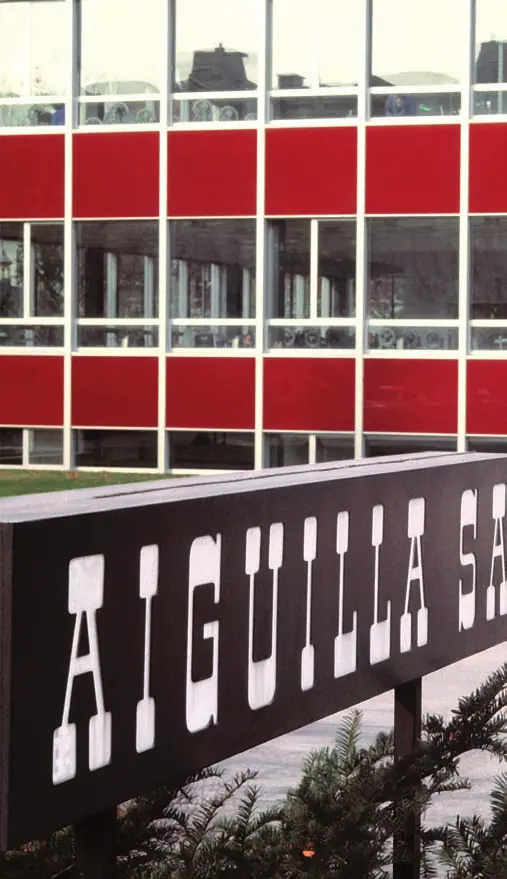
PublireportageAiguilla SA, seconde après seconde... un maître du ballet des aiguilles
Aiguilla SA, second after second... mastering the whirl of watch hands
 Publireportage
PublireportageCFH : formation de pointe conforme aux attentes du marché
CFH: state-of-the-art training to meet the needs of the market
Décors Guillochés – L'excellence décorative, l'art du guillochage
Decorative excellence, the art of guilloche
 Publireportage
PublireportageLa Cible vise l'excellence
La Cible – aiming for excellence
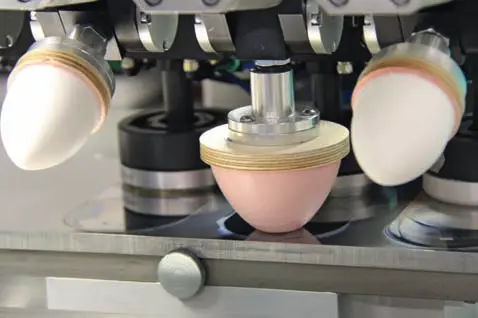
InterviewProcolor LCTI – La tampographie au service de l'horlogerie
Procolor LCTI – Pad printing used for watchmaking
 Publireportage
PublireportageHorlogerie Schild SA – Manufacture horlogère suisse
Plus de 50 ans d'expérience dans le terminage de mouvements
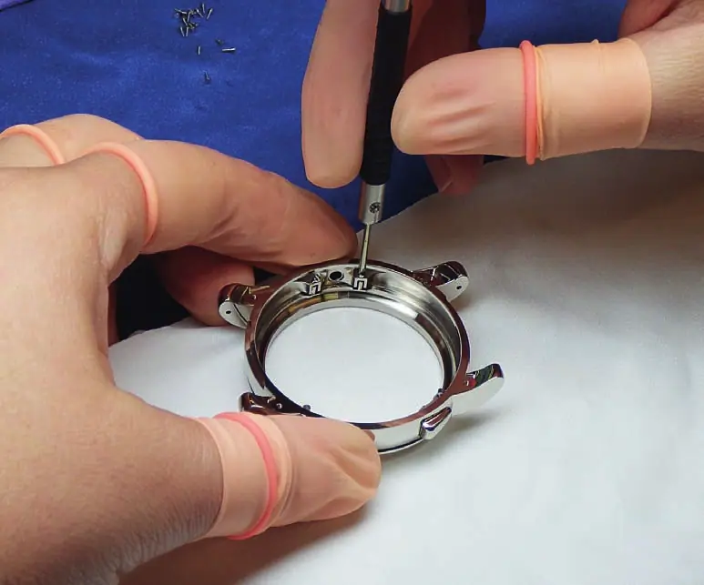
PublireportageQueloz SA – Un spécialiste de l'habillement horloger haut de gamme
Queloz SA – A specialist in high-end watch case production
 Publireportage
PublireportageTechnofinish SA – Tout pour le polissage horloger
Technofinish SA – Everything for watch polishing
PublireportageTechnoformage SA – Conditionnement sur mesure pour les horlogers
Technoformage SA – Tailor-made packaging for watchmakers
PublireportagePolirapid Swiss SA – Brosses techniques pour un polissage parfait
Polirapid Swiss SA – Technical brushes for perfect polishing
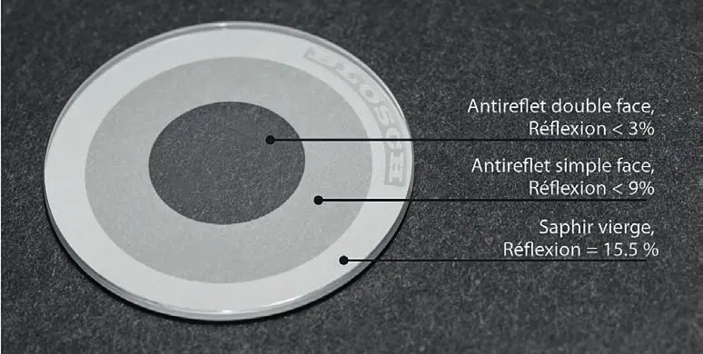
InterviewW. Blösch SA – Couches antireflets innovantes pour l'industrie horlogère
W. Blösch SA – Innovative anti-reflective coatings for the Swiss watchmaking industry
 Interview
InterviewDM Surfaces SA – Des perspectives nouvelles dans le décor horloger
DM Surfaces SA – New opportunities for watch decoration
 Portrait
PortraitGMTI, de l'emboîtage au développement de calibres
GMTI, from casing to movement development
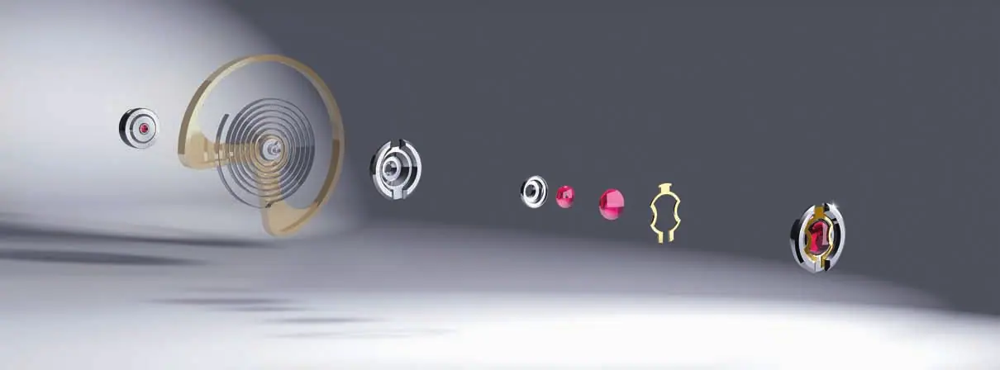
PublireportageIncabloc SA – Une lyre au service de la précision
Meyer Sintermetall – La métallurgie des poudres
 Publireportage
PublireportageTectri SA – Partenaire d'usinages complexes
VOH SA en quelques mots
VOH AG kurz vorgestellt – VOH Ltd in a few words
 Publireportage
PublireportageEREM, le spécialiste des outils à main
EREM, the specialist in hand tools
 Publireportage
PublireportageClaude Piguet SA – Le spécialiste du moulage et de l'usinage de polyuréthane
Claude Piguet SA – Specialists in the moulding and machining of polyurethane
 Publireportage
PublireportageEichenberger Futuretech AG – Le pionnier de la fusion sélective au laser
 Publireportage
PublireportageFEHR et Cie SA – La passion du cadran
Gainerie Moderne SA – L'emballage sur-mesure au service du luxe
Griffes Consulting SA – Faites de vos idées un capital
 Publireportage
PublireportagePosalux SA – La micromécanique est notre passion
Pierre Bercher SA – Le spécialiste de l'injection de plastique
Pierre Bercher SA – The plastic injection specialist
Meylan Frères SA – Le spécialiste du découpage progressif
Meylan Frères SA – The progressive cutting specialist
Stettler Sapphire – La parfaite transparence
Stettler Sapphire – Perfect clarity
 Publireportage
PublireportageLa Manufacture des Franches-Montagnes – In manu veritas
 Publireportage
PublireportageBryek Horlogerie
Altair-Consulting – Experts en prototypage
Banda Swiss – Manufacturer of high quality leather watch straps
GMG Composants – Le spécialiste des aiguilles et des index de montres
 Publireportage
PublireportageTavadec SA / Zimmerli SA
Deux portraits d'entreprises sur une même page
 Publireportage
PublireportageWatchDec SA – En mouvement perpétuel
30 ans d'expérience – Entretien avec le PDG Michel Oesch
30 years of experience – Interview with CEO Michel Oesch
Brasport – Le bracelet cuir, mode excellence
Roxer SA – Le spécialiste des machines de tests d'étanchéité et des outils horlogers
Roxer SA – The specialist in leak testing machines and watchmaking tools
Décotech SA – Le spécialiste de la décoration de mouvements
Inhotec SA – Usinage de précision au service de la très haute horlogerie
MECANOR SA – L'alliance de la productivité et de la précision
MECANOR SA – Combining precision with productivity
 Publireportage
PublireportageCornu & Cie – Le lien au temps
Cornu & Cie – The link to time
 Publireportage
PublireportageManufactures d'Outils Dumont SA – Précision et qualité Swiss made
Manufactures d'Outils Dumont SA – Swiss-made precision and quality
 Publireportage
PublireportageKyburz & Cie SA – Donnez forme à vos idées !
Monnier SA – Électroplastie et décoration horlogère
Monnier SA – Electroplating and watch decoration
Il Ticino è in salute – Il nodo non è quanto si spende ma come si spende...
di Paolo Beltraminelli, Consigliere di Stato, direttore Dipartimento della sanità e della socialità
santésuisse – Interview mit Direktorin Verena Nold Rebetez
Bundesamt für Gesundheit – Interview mit Direktor Pascal Strupler
Staatssekretariat für Bildung, Forschung und Innovation SBFI
 Interview
InterviewUniversitätsSpital Zürich – Im Gespräch mit Spitaldirektorin Rita Ziegler
 Interview
InterviewH+ Die Spitäler der Schweiz – Interview mit Charles Favre, Präsident
 Interview
InterviewFASMED – Dachverband der Schweizerischen Handels- und Industrievereinigungen der Medizintechnik
Im Gespräch mit Urs Gasche, Präsident
Hôpitaux universitaires de Genève – La qualité et l'innovation, un engagement au quotidien
Interview de Bertrand Levrat, Directeur général des HUG
 Interview
InterviewL'EMS, un élément incontournable du réseau de santé
Interview de Pierre Rochat, Président de l'ARODEMS, Directeur de la Fondation Beau-Site
Pour une médecine humaniste
Interview du Pr. Pierre-François Leyvraz, Directeur général du Centre hospitalier universitaire vaudois (CHUV)
 Interview
InterviewUn centre de compétences pour l'achat, l'approvisionnement et la logistique
Interview de Claude-Alain Rebetez, Directeur de la Centrale d'achats des établissements sanitaires société coopérative (CADES)
 Interview
InterviewKantonsspital Aarau – Interview mit CEO Robert Rhiner
 Interview
InterviewSSCB – Swiss Stem Cell Bank: tra conservazione e ricerca, un impegno a tutto campo sul fronte delle cellule staminali
Intervista a Patrizia Franconi, CEO (version anglaise incluse)
 Publireportage
PublireportageForte impegno nella ricerca, eccellenza clinica e innovazione tecnologica: il Cardiocentro Ticino guarda avanti
Version anglaise incluse : Cardiocentro Ticino looks to the future
PublireportageLo Swiss Institute for Regenerative Medicine (SIRM) di Taverne
Dove la ricerca getta le basi per la medicina del futuro e per lo sviluppo culturale ed economico del territorio (version anglaise incluse)
 Publireportage
PublireportageCosanum – Gemeinsam einen Schritt weiter! / Allons de l'avant ensemble
Publireportage bilingue
Centre de Procréation Médicalement Assistée et d'endocrinologie gynécologique – CPMA SA
Un « hub » unique en Suisse pour la prise en charge de l'infertilité (version allemande incluse)
Curmed, à la pointe de l'innovation en orthopédie et en traumatologie depuis 1990
Entretien avec David Perron, directeur de la société Curmed AG
Unispital Basel – Ein starker Partner im Bereich Orthopädie und Traumatologie
Interview mit Privatdozent Dr Geert Pagenstert, Stv. Chefarzt Orthopädische Universitätsklinik Basel
Cité générations – Une maison de santé pluridisciplinaire
 Interview
InterviewFondation Beau-Site – Accompagner la personne âgée en continuum
Interview de Pierre Rochat, Directeur de la Fondation Beau-Site
Departement Chemie Universität Basel – Interview mit Prof. Dr. Marcel Mayor, Departementsleiter
Version française incluse : Département de chimie de l'Université de Bâle
Inselspital Universitätsklinik für Hals-, Nasen- und Ohrenkrankheiten, Kopf- und Halschirurgie
Kompetente medizinische Versorgung im gesamten Hals-, Nasen- und Ohrenbereich – Interview mit Prof. Dr. med. Marco Domenico Caversaccio (version française incluse)
 Publireportage
PublireportageUn centre consacré à l'étude du métabolisme
Département de physiologie de l'Université de Lausanne (version anglaise incluse)
Hôpitaux universitaires de Genève – HUG – Département de santé mentale et psychiatrie
Interview du Professeur Jean-Michel Aubry, Chef du Département (version allemande incluse)
 Interview
InterviewL'Ensemble Hospitalier de la Côte – Un réseau de soins intégrés avant l'heure
Entretien avec le Directeur général de l'EHC, M. François Jacot-Descombes
 Interview
InterviewH-Net AG – Interview mit Michael Ziegler, Geschäftsleiter
 Interview
InterviewHelsinn: Building Quality Cancer Care Together
Interview with CEO Riccardo Braglia (version italienne incluse)
 Publireportage
PublireportageJ.P. Müller AG – Tradition und Kompetenz
 Publireportage
PublireportageMMM Sterilisatoren AG – Die Garantie für perfekt sterilisierte medizinische Instrumente
Version française incluse : La garantie d'instruments médicaux parfaitement stérilisés
 Interview
Interview« Die Entwicklung der Tarifsysteme beeinflusst das Ertragspotenzial »
Interview mit Andreas Mühlemann, Direktor Spital Uster
 Publireportage
PublireportageHumabs BioMed SA – A cure for serious infections developed from former sufferers
 Publireportage
PublireportageMedeco-ch – Le goût de la performance
 Publireportage
PublireportagePoliclinique médicale universitaire Lausanne – Soins de qualité et création de connaissances
Sinomedica, la cultura curativa millenaria cinese e il rigore scientifico occidentale
 Interview
InterviewSpitex Zürich Limmat – Im Gespräch mit CEO Christina Brunnschweiler
Stadt Solothurn – Interview mit Nationalrat Kurt Fluri
Le président de la ville de Soleure et de l'Union des villes suisses
 Interview
InterviewSolothurner Handelskammer – Im Gespräch mit Direktor Daniel Probst
Conditions-cadres, export et pénurie de main-d'œuvre qualifiée
 Interview
InterviewRegion Solothurn Tourismus – Im Gespräch mit Tourismus-Direktor Jürgen Hofer
La plus belle ville baroque de Suisse
 Publireportage
PublireportageDas «Hybridwerk Aarmatt» bringt die Energiewende
Regio Energie Solothurn
 Interview
InterviewSchuldirektion der Stadt Solothurn – Interview mit Irène Schori, Schuldirektorin
Les écoles de la ville de Soleure
Stadt Solothurn – Interview mit der Leiterin des Stadtbauamtes, Andrea Lenggenhager
Culture du bâti et développement urbain
Stadt Zürich – Interview mit Stadtpräsidentin Corine Mauch
Une ville de plus de 400 000 habitants
Stadt Zürich – Amt für Städtebau: Im Gespräch mit Patrick Gmür, Direktor
Densifier en partant de l'histoire de la ville
 Interview
InterviewStadtentwicklung Stadt Zürich – Interview mit Benno Seiler
La promotion économique de la ville de Zurich
 Interview
InterviewGreater Zurich Area – Im Gespräch mit Geschäftsführerin Sonja Wollkopf Walt
Promouvoir la région métropolitaine à l'international
 Interview
InterviewStadt Winterthur – Interview mit Michael Künzle, Stadtpräsident
750 ans de droit de cité
 Interview
InterviewStadt Winterthur, Departement Bau – Im Gespräch mit Michael Hauser
Le chef de l'office de l'urbanisme de Winterthour
Stadt Winterthur, Departement Kulturelles und Dienste – Interview mit Mark Würth
Le responsable du développement urbain
 Interview
InterviewStadt Aarau – Im Gespräch mit Stadtpräsidentin Jolanda Urech
Prix Wakker 2014
InterviewWirtschaftsfachstelle der Stadt Aarau – Interview mit Andreas Burri
Promotion économique de la ville d'Aarau
Schule Aarau – Interview mit Remi Bürgi, Geschäftsleiter
Le modèle de l'école intégrative
 Interview
InterviewAargauische Industrie- und Handelskammer – Im Gespräch mit Geschäftsleiter Peter Lüscher
Version anglaise : Aargau Chamber of Commerce and Industry
«aarau info» – Interview mit Esther Schmid, Leiterin
L'office du tourisme d'Aarau
 Interview
InterviewStadt Baden – Im Gespräch mit Thomas Lütolf, Leiter Standortmarketing
« Baden ist. »
InterviewStadt Baden – Interview mit Stadträtin Ruth Müri, Vorsteherin Ressort Bildung
Baden, ville de formation
 Interview
InterviewSchweizerische Bauschule Aarau – Interview mit Erina Guzzi, Direktorin
Former les cadres de la construction
 Interview
InterviewBBP AG – Interview mit CEO Per Trifunovic
Un « hidden champion » des logiciels bancaires à Baden (version anglaise incluse)
 Interview
InterviewCentris AG, Solothurn – Interview mit Patrick Progin, CEO
« more than IT » pour les assureurs maladie (version française incluse)
 Interview
InterviewEberhard Bau AG – Im Gespräch mit VR-Präsident Heinz Eberhard
60 ans et pionnier de l'« urban mining » (version anglaise incluse)
 Interview
InterviewELEX AG – Im Gespräch mit Geschäftsführer Peter Studer
Électrofiltres et épuration des fumées
 Interview
InterviewHardturm AG, Zürich – Im Gespräch mit Verwaltungsratspräsident Vincent Albers
Le Hard Turm Park à Zurich-Ouest (version anglaise incluse)
 Interview
InterviewH-Net AG – Interview mit Michael Ziegler, Geschäftsführer
Services eHealth et dossier électronique du patient
 Interview
InterviewHörmann Schweiz AG – Interview mit CEO Andreas Breschan
Portes et portails (version française incluse)
 Interview
InterviewIBAarau AG – Interview mit Dr. Hans-Kaspar Scherrer
Le fournisseur d'énergie et d'eau d'Aarau (version anglaise incluse)
 Publireportage
PublireportageIMP Bautest AG – Materialprüfung, Bauberatung, Analytik
Laboratoire indépendant d'essais de matériaux de construction
Die Zürcher Mittelschulen – Interview mit Alexandra Siegrist-Tsakanakis
IMPULS MITTELSCHULE (version française incluse)
 Interview
InterviewJura Materials – Interview mit André Germann, Bereichsleiter Verkauf
HASTAG (Zürich) AG, gravier, béton et recyclage
 Interview
InterviewMEWORLA GmbH – Interview mit Geschäftsführer Michael Baumer
CRM pour associations et gestion des affaires parlementaires
Neosys AG – Dienstleistungen für die Nachhaltigkeit: Interview mit Jürg Liechti
Environnement, sécurité et conformité légale (version française incluse)
InterviewRegio Energie Solothurn – Interview mit Felix Strässle, Direktor
« Energie-service public – so nah, so gut »
 Interview
InterviewAmt für Kultur und Sport des Kantons Solothurn – Interview mit Cäsar Eberlin, Amtsleiter
Patrimoine, encouragement culturel et sport
Die Qualitätsmühle mitten in Zürich
Nachhaltigkeit als Antrieb der grössten Mühle der Schweiz
 Interview
InterviewHochschule für Wirtschaft FHNW – Interview mit Prof. Dr. Ruedi Nützi, Direktor
Une formation pratique et internationale
 Interview
InterviewStadt Solothurn – Interview mit Nationalrat Kurt Fluri
Le président de l'Union des villes suisses
 Portrait
PortraitSion, une petite capitale devenue un vrai centre urbain
Un développement ambitieux et harmonieux – Marcel Maurer, président de la Ville de Sion
InterviewSion, une ville attractive pour l'économie et le tourisme
Interview de Benoît Fournier, vice-président de Sion et président de Sion Tourisme
InterviewRenforcer la mobilité douce et les transports publics
Interview de Georges Joliat, chef du service des travaux publics de la Ville de Sion
InterviewLe sport pour tous !
Interview de Blaise Crittin, chef du service des sports de la Ville de Sion
InterviewUn aéroport accessible, proche des grandes stations
Interview de Cyrille Fauchère, président de la commission de l'aéroport international de Sion
InterviewDu dynamisme de la vie culturelle sédunoise
Interview de Gaëlle Métrailler, déléguée culturelle de la Ville de Sion
InterviewCultiver le vivre ensemble et le respect
Interview de Vincent Pellissier, conseiller municipal de Sion en charge de l'instruction publique
 Publireportage
PublireportageBativa SA – Nous réalisons pour vous !
Génie civil, bâtiment et aménagements à Sion
 Publireportage
PublireportageCIGES SA – Le spécialiste de l'informatique centralisée
Centre informatique de gestion à Sion
 Publireportage
PublireportageCombustia SA – Votre fournisseur valaisan en carburant et huile de chauffage
Mazout, carburants et 30 stations-service
 Publireportage
PublireportageCSS Assurance – Un partenaire qui en vaut la peine à plus d'un titre
Gestion de la santé en entreprise avec vivit
 Publireportage
PublireportageEditech SA – Votre partenaire pour les structures et le génie civil
Bureau d'ingénieurs à Ayent et Sion
 Publireportage
PublireportageGDclimat SA – 30 ans d'expérience à votre service
Chauffage, ventilation, climatisation – partenaire de Minergie
 Publireportage
PublireportageValcoris Gestion – Votre partenaire pour un avenir sûr
Gestion de fortune, fiduciaire et accompagnement des seniors (version anglaise incluse)
 Publireportage
Publireportageswisspro – Des solutions globales de qualité
Installations électriques, ICT et BCT en Suisse romande
 Interview
InterviewMartigny, un état d'esprit
Marc-Henri Favre, dynamique président de la Ville
DossierMartigny, un modèle d'intégration scolaire
« Apprendre tous ensemble en respectant chacun » – Anne-Laure Couchepin Vouilloz
DossierLa sécurité civile exige une organisation sans faille
Martigny assume son rôle de chef-lieu – Serge Fellay
DossierLa Fondation Gianadda, temple des arts plastiques
Martigny au carrefour des arts et du tourisme – Michaël Hugon
DossierMartigny à l'horizon 2030
Un développement assumé et maîtrisé – Florence Kuonen
DossierLa Place Centrale de Martigny – À la hauteur de son histoire
David Martinetti, conseiller municipal en charge des Travaux & Bâtiments publics
 Publireportage
PublireportageSinergy, partenaire de proximité
Électricité, eau, chauffage, TV numérique, Internet et téléphone – Patrick Pralong, directeur
DossierMartigny, énergétiquement exemplaire
Une politique cohérente à long terme – René Quiros
 Publireportage
PublireportageMont-Blanc Express : la voie royale pour le Mont-Blanc
TMR, le transporteur régional incontournable
 Portrait
PortraitSierre relève les défis du 21e siècle
Le plus important campus étudiant du Valais – François Genoud, président de la Ville
InterviewFavoriser les transports publics et la mobilité douce
Interview de Pierre Kenzelmann, conseiller municipal de Sierre en charge des travaux publics
InterviewDes conditions-cadres favorables pour les entreprises
Interview de Pierre Berthod, conseiller municipal de Sierre en charge de l'économie publique
InterviewDévelopper des collaborations à l'échelle régionale
Interview de Laetitia Massy, conseillère municipale de Sierre en charge de l'enseignement et des actions sociales
InterviewLe pragmatisme au service de l'environnement
Interview de Mario Rossi, conseiller municipal de Sierre en charge de l'environnement, de l'eau et de l'énergie
InterviewUn centre-ville fort et des quartiers dynamiques
Interview de Jean-Paul Salamin, conseiller municipal de Sierre en charge de l'aménagement du territoire
 Publireportage
PublireportageV+A Zwissig SA – Entreprise de transports orientée clients
Une entreprise familiale sierroise depuis 1912
 Publireportage
PublireportageBanque Raiffeisen – Une coopérative de proximité
Banque Raiffeisen de Sierre et Région
 Publireportage
PublireportageLaboratoire d'analyses médicales Dr Luc Salamin – Répondre aux besoins du canton du Valais
Un laboratoire privé et indépendant à Sierre et Sion
 Interview
Interview« Neuchâtel, art de vivre et innovation »
Olivier Arni, président de la Ville, décline la nouvelle devise en axes stratégiques
 Interview
InterviewUrbanisme, Économie, Environnement – Des logements et des projets d'urbanisme
Olivier Arni, directeur de l'Urbanisme, de l'Économie et de l'Environnement
 Interview
InterviewÉducation, Santé et Mobilité – Christine Gaillard, une volonté politique affirmée
La conseillère communale de Neuchâtel
InterviewPolitique d'agglomération – « Nous savons où nous allons et ce que nous voulons »
Pascal Sandoz, conseiller communal de Neuchâtel
 Interview
InterviewCulture, Sports et Tourisme – Un espace de congrès en perspective
Thomas Facchinetti, conseiller communal de Neuchâtel
 Publireportage
PublireportageAdax SA – Le leader du décolletage de haute précision
De la montre à l'espace
 Publireportage
PublireportageHYBRID SA – La microélectronique à votre service !
Assemblage de circuits électroniques miniaturisés
 Publireportage
PublireportageTransports Publics Neuchâtelois SA – transN : notre force, votre réseau
Le transporteur public du canton de Neuchâtel
 Publireportage
PublireportageENDETEC – NEROXIS : de la source à l'utilisateur, deux outils pour garantir une eau de haute qualité
Monitoring des réseaux d'eau potable
 Interview
InterviewGroupe E dans le canton de Neuchâtel – Engagement durable et présence renforcée
Entretien avec Dominique Gachoud, directeur général
 Interview
Interviewarcjurassien.ch – Au centre du dialogue et des projets
Interview de Madame Mireille Gasser, secrétaire générale d'arcjurassien.ch
 Interview
InterviewL'Arc jurassien, une vue de l'esprit ?
Pierre-Alain Rumley en toute franchise – Interview du professeur d'aménagement du territoire et d'urbanisme à l'Université de Neuchâtel
 Interview
Interview« Les différences sont moins importantes que les ressemblances »
Interview de Monsieur Pascal Broulis, président volontariste d'arcjurassien.ch
 Interview
InterviewNeuchâtel, au cœur de l'Arc jurassien – Trois axes de développement
Interview avec Monsieur Thierry Grosjean, chef du Département de l'économie canton de Neuchâtel
 Interview
InterviewLe canton du Jura dans l'Arc jurassien – Une fenêtre ouverte sur Bâle
Interview de Madame Elisabeth Baume-Schneider, Ministre jurassienne de la Formation, de la Culture et des Sports
 Interview
InterviewLe canton de Berne, acteur à part entière – « Ce n'est pas la surface qui compte »
Interview avec Monsieur Philippe Perrenoud, conseiller d'Etat bernois francophone
 Interview
InterviewL'Arc jurassien, terre promise ?
Les convictions de Laurent Kurth – Interview avec Monsieur Laurent Kurth, conseiller d'Etat neuchâtelois
 Interview
InterviewBienne, prospère et dynamique – Au carrefour des langues et des régions
Interview de Monsieur Erich Fehr, maire de la ville de Bienne
 Interview
Interview« Viendra un jour où la frontière n'existera plus dans nos têtes »
Commune de Sainte-Croix – Interview avec Monsieur Franklin Thévenaz, Syndic de Sainte-Croix
 Interview
InterviewVers une société à 2000 watts – Un projet des villes pour l'Arc jurassien
Interview de Monsieur Pierre Brulhart, conseiller communal à Delémont (directeur du Département de l'énergie et des eaux)
 Interview
InterviewLes communes, moteur de la coopération transfrontalière
Interview de M. Patrick Genre, Maire de Pontarlier
 Interview
InterviewMinnovarc en quête d'innovation – Des microtechniques pour demain
Interview avec Monsieur Pierre Rossel, chef de projet de Minnovarc – Innovation franco-suisse dans les microtechniques
 Interview
InterviewDans le miroir des statistiques – Un observatoire transfrontalier
Interview de Monsieur Gérard Geiser, chef du Service de statistique du canton de Neuchâtel, qui coordonne les activités de l'OSTAJ du côté suisse
 Interview
InterviewUn parc transfrontalier pour une communauté de destin
Interview de Mme Anne Girardet, Chargée de mission transfrontalière pour le Pays Horloger et le Parc naturel régional du Doubs
Atelier für Direkte Demokratie St Ursanne – "Der Jura – eine geniale Region!"
Interview mit Andreas Gross, Leiter des Ateliers für Direkte Demokratie / « Le Jura : une région qui a du génie ! »
 Interview
InterviewNeuchâtel, un pôle de formation – Mieux orienter les jeunes
Interview avec Monsieur Philippe Gnaegi, directeur du Département de l'Éducation, de la Culture et des Sports (DECS)
 Interview
InterviewStandortförderung Kanton Bern
Interview mit Denis Grisel, Leiter der Standortförderung des Kantons Bern (SF BE)
 Interview
InterviewLa promotion économique neuchâteloise – L'Arc jurassien en tant que creuset d'innovation
Interview de Monsieur Alain Barbal, directeur de la promotion économique du canton de Neuchâtel (DEN Sàrl)
Stadt Bern – "Politik ist die Kunst, zur richtigen Zeit die richtigen Rahmenbedingungen zu setzen"
Interview mit Alexander Tschäppät, Stadtpräsident von Bern / « La politique est l'art de réunir les bonnes conditions au moment idoine »
 Interview
InterviewTiefbauamt der Stadt Bern – "Wir bewirtschaften den öffentlichen Raum"
Interview mit Hans-Peter Wyss, Stadtingenieur Bern / Office des ponts et chaussées de la ville de Berne – « Nous gérons l'espace public »
 Interview
InterviewStadt Bern – Interview mit Martin Baumann, Stadtbauinspektor der Stadt Bern
Bauinspektorat: Baubewilligungen, Baupolizei und Wohnraumschutz
 Interview
InterviewDes problématiques et des ambitions communes
Interview de M. Daniel von Siebenthal, Syndic d'Yverdon-les-Bains
WIRTSCHAFTSRAUM BERN – "Beispielhaftes Zusammenwirken von Stadt und Land"
Interview mit Hans-Jürg Gerber, Leiter WIRTSCHAFTSRAUM BERN / « Une synergie exemplaire entre ruralité et urbanité »
Stadt Biel
Interview mit Thomas Gfeller, Delegierter für Wirtschaft Stadt Biel
 Interview
InterviewLa coopération transfrontalière, une évidence
Interview de M. Etienne Roy, Préfet du Jura-Nord vaudois
 Interview
InterviewWirtschaftskammer Biel-Seeland (WIBS) – "Vernetzen. Beleben. Unterstützen. In Biel und im Seeland."
Interview mit Esther Thahabi, Geschäftsführerin WIBS
 Publireportage
PublireportageAdax SA décolletage à forte technicité – Petit, précis, complexe
Entretien avec M. Urs Kamber, directeur général
 Publireportage
PublireportageANNAX Schweiz AG
Interview mit Martin Jaeggi, Unternehmensleiter / ANNAX Suisse S.A. – Entretien avec Martin Jaeggi, directeur de l'entreprise
 Publireportage
Publireportagebawaco ag – Engineering, Automation und komplette Systemlösungen in der Molkerei- und Früchteverarbeitenden Industrie
Ingénierie, automatisation et solutions systèmes complètes pour les industries laitière et de transformation des fruits
 Publireportage
PublireportageCendres+Métaux – Le savoir-faire au cœur de la matière
Horlogerie et bijouterie, médical et dentaire, refining
 Publireportage
PublireportageBOVARD AG – Patent- und Markenanwälte
Im Gespräch mit Tarik Kapic, Mitglied der Geschäftsleitung / BOVARD SA – Conseils en brevets et en marques
 Publireportage
PublireportageNeroxis – Pour la préservation de l'environnement
Neroxis – Protecting the environment
 Publireportage
PublireportageManufacture Cartier Horlogerie La Chaux-de-Fonds
Interview avec Jean-Kley Tulli, Directeur Manufacture Cartier Horlogerie
 Publireportage
PublireportageCorum – Célèbre et revisite deux collections, piliers de son histoire
50e anniversaire de l'Admiral's Cup - 30e anniversaire de la Golden Bridge
Emch+Berger AG Bern – Gesamtlösungen in den Bereichen Bau, Umwelt, Mobilität und Energie
Interview mit Kurt E. Wagner, VR-Delegierter und CEO, und Mirko Feller, Stv. CEO / Solutions globales dans les domaines de la construction, de l'environnement, de la mobilité et de l'énergie
 Publireportage
PublireportageEnergie Service Biel/Bienne (ESB) – Energie für die Stadt Biel und die Region Seeland
Interview mit Heinz Binggeli, Direktor ESB / De l'énergie pour la ville de Bienne et la région du Seeland
 Publireportage
PublireportageErnst & Young AG – Starker lokaler Partner mit hervorragender internationaler Vernetzung
Interview mit Thomas Nösberger, Leiter Ernst & Young Bern / Un partenaire local fort avec un réseau international d'exception
 Publireportage
PublireportageFAFCO souffle le chaud et le froid – Pour le bâtiment et l'industrie
Eisspeicher und Solarheizsysteme von FAFCO – Für Gebäudetechnik und Industrie
 Publireportage
PublireportageJ. Baertschi SA – Un grand parc de machines multibroches
Ein umfangreicher Mehrspindelmaschinenpark
 Publireportage
PublireportageFondation Bartimée
Traitement, réinsertion sociale et professionnelle des personnes dépendantes
GEOTEST AG, Zollikofen
Geschäftsleitung: R. Brinkmann, Dr. Ch. Meyer / GEOTEST SA – Géologie, géotechnique, géophysique, environnement
 Publireportage
PublireportageHôpital du Jura bernois SA – Proximité et qualité
Hôpital du Jura bernois SA – Nähe und Qualität
HRS Real Estate AG
Im Gespräch mit Martin Kull, VR-Delegierter, CEO und Inhaber / Entretien avec Martin Kull, délégué du conseil d'administration, CEO et propriétaire
Itten+Brechbühl AG – Architekten und Generalplaner
Fragen an Herrn Christoph Arpagaus, Vorsitzender der Geschäftsleitung / Itten+Brechbühl SA – Architectes et planification générale
 Publireportage
PublireportageDie Voser Treuhand AG – "Klein aber fein"
Christian Voser, Gründer und Geschäftsführer / « Petite mais efficace »
L. Klein AG, Biel – Edelstähle und Metalle für Kunden in der ganzen Welt
Interview mit Olivier und Philippe Schiess, Geschäftsleiter / Aciers fins et métaux pour nos clients du monde entier
Meyer Sintermetall AG, Studen – Wenn bei Formteilen Qualität, Präzision und Wirtschaftlichkeit zählt
Interview mit Christoph Meyer, Direktor / L'importance de la qualité, de la précision et de la rentabilité dans le domaine des pièces moulées
NMS Bern – "Bei uns stehen die Lernenden im Zentrum"
Interview mit Annette Geissbühler, Direktorin NMS / « L'élève est au centre de nos préoccupations »
 Publireportage
PublireportageNotz Plastics SA – Livraisons rapides - conseil expert
Notz Plastics AG – Rasche Lieferung - fachkundige Beratung
 Publireportage
PublireportagePärli AG, chauffage et sanitaire – Le partenaire pour tous les temps
Entretien avec M. Michel Pasche, directeur administratif
 Publireportage
PublireportagePosalux AG, Biel/Bienne – «Hightech alleine genügt nicht»
Interview mit René Stössel, CEO Posalux / « Le high-tech ne se suffit pas à lui-même »
 Publireportage
PublireportageSWIP Saphirwerk Industrieprodukte AG, Brügg – "The Swiss Spirit of Precision"
Interview mit Thomas Jordi, Geschäftsleiter Saphirwerk / « L'esprit suisse de la précision »
 Publireportage
PublireportageVigier Beton Seeland Jura
Im Gespräch mit Erich Wälti, Unternehmensleiter / Entretien avec Erich Wälti, dirigeant de Vigier Beton Seeland Jura
Stadt Zürich
Interview mit Corine Mauch, Stadtpräsidentin von Zürich
Zürcher Handelskammer (ZHK)
Interview mit Dr. Karin Lenzlinger, Präsidentin ZHK
Zürcher Handelskammer (ZHK) – Direktion
Interview mit Regine Sauter, Direktorin ZHK
Volkswirtschaftsdirektion des Kantons Zürich – «Ideale Rahmenbedingungen für erfolgreiches und gesundes Wachstum schaffen»
Interview mit Regierungsrat Ernst Stocker
Zürcher Handelskammer (ZHK) – Wirtschaftswochen
Interview mit Giulia Bonaldi
Zürcher Handelskammer (ZHK) – Export-Dienstleistungen
Interview mit Giovanni Montera, Chef Beglaubigungsdienst
Zürcher Handelskammer (ZHK) – Schiedsgericht
Interview mit Elena Stancato, lic. iur., Leiterin Schiedsgerichtsabteilung
Zürcher Handelskammer (ZHK) – Direktion
Interview mit Beat Zimmermann, Stv. Direktor ZHK
aebi+kuehni ag – Headhunting neu definiert
Im Gespräch mit Doris Aebi und René Kuehni
Atelier 10:8, Zürich
Interview mit Katrin Schubiger, Georg Rinderknecht und Jürg Senn
atelier ww Architekten SIA AG
Interview mit Walter Wäschle, Mitinhaber und Christoph Schmid, Mitglied Geschäftsleitung
Dr. Bauingenieure J. Grob & Partner SIA/USIC AG
Interview mit Dr. Josef Grob, Geschäftsleiter
Eberhard Bau AG
Im Gespräch mit VR-Präsident Heinz Eberhard
Elex AG
Im Gespräch mit Peter Studer, Leiter Verkauf
Fabrimex Systems AG, Volketswil
Interview mit Urs Zimmermann, Managing Director
Flückiger + Bosshard AG
Im Gespräch mit Dieter Flückiger, Dr. sc. techn., dipl. Bauing. ETH, Geschäftsleitung
Gebrüder Loepfe AG
Im Gespräch mit Maurizio Wermelinger, CEO und Delegierter des Verwaltungsrates
Hardturm AG, Zürich
Interview mit Vincent Albers, Verwaltungsratspräsident Hardturm AG
Havells-Sylvania Switzerland AG
Fragen an Thomas Rauscher, Geschäftsführer
H-Net AG – innovative eHealth-Lösungen
Im Gespräch mit Geschäftsführer Michael Ziegler
IMT Masken und Teilungen AG, Greifensee
Interview mit Dr. Jean-François Willemin, Geschäftsleiter
ITPC AG, Zürich
Interview mit Vincenzo Boesch, CEO und Technology Lead
Jakob Stiefel GmbH
Im Gespräch mit Geschäftsführer Martin Stiefel
Klinik Susenberg, Zürich – Umfassende Betreuung in schwierigen Lebenslagen
Interview mit Dr. Christel Nigg, Leitende Ärztin und Dr. Nic Zerkiebel, Chefarzt
Lernpädagogisches Zentrum Zürich
Interview mit Ruth Gisler, Schulleitung und Claude Jubin, Stellvertreter Schulleitung LPZ
LUZI AG
Im Gespräch mit Geschäftsführer Jürg Koller
Medizinisches Zentrum Römerhof
Im Gespräch mit Dr. med. Galleon Graetz, Facharzt FMH für Innere Medizin
Meworla GmbH
Im Gespräch mit Geschäftsführer Michael Baumer
Nilan AG
Im Gespräch mit Geschäftsführerin Stina Andersen
Pöyry Schweiz AG
Interview mit Martin Bachmann, Executive Vice President der Pöyry PLC und Verwaltungsratspräsident der Pöyry Schweiz AG
Spannverbund Bausysteme GmbH
Interview mit Paul Horn, Geschäftsführer, Verkauf Schweiz
Swissmem
Im Gespräch mit Peter Dietrich, Direktor
Die Qualitätsmühle mitten in Zürich
Nachhaltigkeit als Antrieb der grössten Mühle der Schweiz
UniversitätsSpital Zürich
Im Gespräch mit Spitaldirektorin Rita Ziegler
 Interview
InterviewUn Cantone che ha grandi potenzialità
Intervista con Franco Ambrosetti, Presidente della Camera di commercio del Cantone Ticino (version anglaise : A canton with great potential)
InterviewLa nostra forza è la rete
Luca Albertoni, Direttore della Camera di commercio del Cantone Ticino (version anglaise : Our strength is the network)
 Éditorial
ÉditorialUn Ticino propizio per l'economia
Laura Sadis, Consigliera di Stato e Direttrice del Dipartimento delle finanze e dell'economia (version anglaise incluse)
ÉditorialUn sostegno concreto alle aziende
Stefano Rizzi, Direttore della Divisione dell'economia (version anglaise incluse)
DossierCc-Ti – Camera di commercio dell'industria, dell'artigianato e dei servizi del Canton Ticino
Associazione mantello dell'economia ticinese (version anglaise incluse)
InterviewCc-Ti Servizio politica economica – Condizioni quadro adeguate per vincere la concorrenza
Rinaldo Gobbi, Vicedirettore (version anglaise incluse)
InterviewCc-Ti Servizio Associazioni – Consulenza efficace e gestione dei segretariati
Gabriele Lazzaroni, Vicedirettore, Sostituto del Direttore (version anglaise incluse)
InterviewCc-Ti Servizio giuridico – Per non perdersi nel labirinto delle leggi
Simona Morosini Marconi, Vicedirettrice (version anglaise incluse)
InterviewCc-Ti Servizio export – Consulenza, formazione e informazione per far crescere le esportazioni
Marco Passalia, Vicedirettore e Responsabile del Servizio Export e Legalizzazioni (version anglaise incluse)
InterviewCc-Ti Servizio finanziario e Cassa assegni familiari – Cassa assegni familiari concorrenziale
Alberto Riva, Vicedirettore, Responsabile del Servizio finanziario e gestionale (version anglaise incluse)
DossierCc-Ti Rapporti con l'estero – Centro di competenze dell'export Ticino
Cc-Export-Ti (version anglaise incluse)
DossierCc-Ti Formazione – Formazione di base e continua all'avanguardia
Quality basic and advanced training
DossierCc-Ti Eventi – Conferenze, seminari, incontri e assemblea
Conferences, seminars, meetings and assembly
 Interview
InterviewFTAF – Federazione ticinese delle associazioni di fiduciari: valore aggiunto per la piazza finanziaria
Cristina Maderni, Presidente FTAF (version anglaise incluse)
 Interview
InterviewIl REG – Fondazione dei Registri svizzeri dei professionisti nei rami dell'ingegneria, dell'architettura e dell'ambiente compie 60 anni
Intervista al Presidente Dott. Ing. Giuliano Anastasi (version anglaise incluse)
 Publireportage
PublireportageHelsinn: plasmare alleanze e sviluppare prodotti farmaceutici
Helsinn: Shaping Alliances, Building Pharmaceuticals – Riccardo Braglia, CEO
 Publireportage
PublireportageCCT Formazione Linguistica e Culturale – La qualità al servizio degli allievi
Margaret De Lorenzi-Pertot, direttrice (version anglaise incluse)
Alpex Pharma SA – Development & Manufacturing Fast Release Products from Switzerland
Comprimés orodispersibles et effervescents à Mezzovico
 Publireportage
PublireportageAlpiq InTec Ticino SA – Al passo con i tempi
Installations techniques du bâtiment
 Publireportage
PublireportageAnastasi SA Ingegneria – 25 anni di impegno
Bureau d'ingénieurs à Locarno
Ernst & Young – Una società attenta alle peculiarità locali
An organization attentive to local distinctiveness
 Publireportage
PublireportageCippà Trasporti SA – Trasporto come valore aggiunto
Transports, logistique et douane à Chiasso
 Publireportage
PublireportageDarwin Airline – Una storia in continua evoluzione, per un successo garantito
Compagnie aérienne régionale basée à Lugano
 Publireportage
PublireportageClinica Hildebrand Centro di riabilitazione Brissago – Costruito attorno all'uomo
Gianni Roberto Rossi, direttore (version anglaise incluse)
 Publireportage
PublireportageCSCS, il Centro nazionale di supercalcolo nella nuova innovativa struttura di Lugano
Swiss National Supercomputing Centre (version anglaise incluse)
 Publireportage
PublireportageDRIMA SA – La persona giusta al posto giusto
Placement temporaire et fixe à Lugano et Stabio
Erbicol SA – Ricerca e sviluppo alla base del successo
R&D as the foundation for success – Luca Romelli, direttore generale
 Publireportage
PublireportageBDO SA – Revisione, consulenza, fiduciaria al servizio delle imprese
Claudia De Stefano-Diana e Christian Vitta
FLP – Ferrovie Luganesi SA: un treno lungo 100 anni lanciato verso il futuro
Giorgio Marcionni, direttore
 Publireportage
PublireportageFART Ferrovie Autolinee Regionali Ticinesi – Le FART sulla strada del successo
Mauro Caronno, direttore (version anglaise incluse)
 Publireportage
PublireportageFrutta Banfi SA – Oltre un secolo di qualità e freschezza
Fruits et légumes à Gordola et Giubiasco
Gandolfi – John P. Gandolfi Insurance Brokers, trent'anni di esperienza nella gestione del rischio
Thirty years' experience in risk management
 Publireportage
PublireportageCentro di Competenza Agroalimentare – « Ticino a Tavola », il gusto del terroir
GastroTicino
 Publireportage
PublireportageGruppo Sicurezza – Sentirsi sicuri
Feel safe – Systèmes de sécurité à Savosa
 Publireportage
PublireportageIl Falegname Fabrizio Sagl – Lo stile e il design nella falegnameria
Carpentry style and design – Fabrizio Wüthrich
La Mobiliare Agenzie generali Bellinzona e Lugano – L'assicurazione più personalizzata della Svizzera
Marco Ferrari et Franco R. Ferrari, agents généraux
Unipharma SA – Esperienza ed efficacia nel reperire ogni tipo di farmaco
Experience and efficiency in sourcing any drug
Medacta International – Leader nel settore delle endoprotesi per anca e ginocchio
Entretien avec Alberto Siccardi, président
NAT – New Ambrosetti Technologies SA: meccanica di precisione anche sulla Luna
Precision mechanics, even on the Moon – Silvano Casini, direttore
 Publireportage
PublireportageOSC – Organizzazione sociopsichiatrica cantonale: disagio psichico, una rete territoriale efficace
Michele Salvini, direttore (version anglaise incluse)
PKB Privatbank – Una banca in continua crescita orientata al futuro
Intervista con Ferdinando Coda Nunziante, Direttore Generale (version anglaise incluse)
Sandro Vanini SA – Specialità ticinesi: nuova sede a Rivera
Ticino specialities: new factory in Rivera – Dr Gert Silber, direttore
 Publireportage
PublireportageDeposito Franco Doganale di Chiasso e Stabio – Logistica come valore aggiunto allo sviluppo cantonale
Giorgio Mischler, direttore (version anglaise incluse)
Residenza Rivabella – Un angolo di paradiso in riva al lago di Lugano
Alexandre Aleman, direttore (version anglaise incluse)
Calderari Insieme® – Insieme per progettare, costruire, abitare
Le groupe de construction Calderari à Rancate
Cedica SA – Il calcestruzzo col marchio svizzero
Béton prêt à l'emploi dans le Mendrisiotto
Ticinomoda – Fashion Valley Ticino: paradiso delle « grandi firme »
Franco Cavadini, Presidente
 Publireportage
PublireportageTIMCAL Graphite & Carbon – Dal Ticino il know-how per essere leader mondiali
Davide Cattaneo, CEO & General Manager (version anglaise incluse)
 Publireportage
PublireportageTrasporti Pubblici Luganesi SA – 2012: l'anno della riorganizzazione
Franco Greco, direttore (version anglaise incluse)
 Publireportage
PublireportageTurbomach – Azienda leader nella produzione di turbine per la produzione di energia
Marc Brusseleers, direttore
 Interview
InterviewLes HUG à l'horizon 2015
Entretien avec M. Bernard Gruson, directeur général (version anglaise : The HUG by 2015)
InterviewLes HUG font peau neuve
Quatre gros chantiers simultanés – avec M. F. Taillard, directeur général adjoint (version anglaise : The HUG gets a facelift)
InterviewUn modèle « d'hôpital vert »
Les HUG en pionniers européens (version anglaise : The model of a "green hospital")
InterviewAu cœur de la Genève internationale
Les HUG s'impliquent dans des projets humanitaires – avec le professeur Louis Loutan (version anglaise incluse)
InterviewL'indispensable « U » des HUG
Une interface nouvelle entre l'Hôpital et la Faculté – avec le professeur Jean-Louis Carpentier (version anglaise incluse)
InterviewSécurité et qualité aux HUG
Souci d'excellence et outils performants pour réduire les risques – avec le Dr Pierre Chopard (version anglaise incluse)
InterviewSur le front de la médecine de premier recours
Les HUG assument leur rôle social en toute transparence – avec le professeur Jean-Michel Gaspoz (version anglaise incluse)
InterviewLe sport entre santé et performance
Une unité médicale performante – avec le Dr Jacques Menetrey (version anglaise incluse)
InterviewInfarctus : diminuer le risque de récidive
Les HUG ont initié le programme ELIPS® à l'échelle nationale – avec le Dr Pierre-Frédéric Keller (version anglaise incluse)
InterviewLa médecine génétique
Genève au cœur d'une révolution médicale – avec le professeur Stylianos Antonarakis (version anglaise incluse)
InterviewLa chirurgie entre dans une nouvelle ère
Les HUG leaders en chirurgie robotique – avec le professeur Philippe Morel (version anglaise : Surgery enters a new era)
DossierGreffes du foie chez l'enfant
Les HUG à la pointe (version anglaise : Liver transplants for children)
InterviewLes anévrismes intracrâniens
@neurIST, un projet porteur d'espoir – avec le Dr Philippe Bijlenga (version anglaise incluse)
InterviewLe laboratoire de virologie
Un centre de référence national – avec le professeur Laurent Kaiser (version anglaise incluse)
Interview« Prometheus » contre Parkinson
Les HUG au centre d'un vaste projet de recherche – avec le professeur Pierre Burkhard (version anglaise incluse)
InterviewLes défis de la psychiatrie
Nouveaux modèles de prise en charge – avec le professeur Pandelis Giannakopoulos (version anglaise incluse)
InterviewLa recherche clinique aux HUG
Un centre au service des chercheurs – avec le professeur Bernard Hirschel (version anglaise incluse)
DossierOncologie : les HUG à la pointe
Un écrin spécialisé pour la recherche – avec le professeur Pierre-Yves Dietrich (version anglaise incluse)
InterviewHUG et EPFL unis contre le cancer
La stratégie du vaccin thérapeutique – avec le Dr Nicolas Mach (version anglaise incluse)
DossierCIBM : une plate-forme de recherche au service de la médecine
Avec le Dr François Lazeyras, directeur du CIBM Genève (version anglaise incluse)
DossierMicroPET : la plate-forme genevoise d'imagerie moléculaire du CIBM
Version anglaise : MicroPET: the Genevan platform for CIBM molecular imaging
 Dossier
DossierUn centre d'étude en neurosciences unique en Europe
Brain and Behaviour Laboratory (BBL) – avec le professeur Patrik Vuilleumier, codirecteur
Une formation pour éviter les erreurs au bloc opératoire
Le cours « Crew Resource Management » Swiss-HUG – entretien avec le Dr Domizio Suva
 Dossier
DossierDe l'excellence académique au succès économique
UNITEC, dix ans de transfert de technologies – entretien avec Laurent Mieville
 Dossier
DossierThérapies cellulaires en plein développement
SICT, une fondation qui accélère le mouvement – entretien avec la Dre Marisa Jaconi
OsiriX, l'imagerie médicale en 3D à la portée de tous
Un logiciel libre né aux HUG – professeur Osman Ratib et Dr Antoine Rosset
 Dossier
DossierMaladies rares, nombreuses souffrances
Pour une stratégie nationale – entretien avec la Dre Loredana D'Amato Sizonenko (Orphanet, ProRaris)
Alexion Pharma International
An interview with Patrice Coissac – “Delivering hope, restoring health, enhancing life”
ATMOS Medical AG
Entretien avec M. Jacky Noll, directeur
Centre d'imagerie biomédicale (CIBM)
Un modèle de collaboration dans le domaine de la recherche
La Croix-Rouge genevoise, au service de la population
Entretien avec Mme Eliane Babel-Guérin, directrice
Curmed SA, Ostermundigen
Un partenaire fort en chirurgie de la main, orthopédie et traumatologie – entretien avec M. David Perron, directeur
Dianalabs
Un laboratoire à l'écoute des patients et des médecins
ID Imagerie & Développement : qualité, disponibilité et service
Instituts Imagerive et Radiologie La Colline
J.P. Müller AG
Tradition et compétences : le savoir-faire de J.P. Müller AG
MayBa.ch, le spécialiste en stérilisation hospitalière
Avec Stéphane Mayor et Ralf Bachman, fondateurs
Medacta International
Une vie meilleure grâce aux progrès orthopédiques
Medicatech
Entretien avec M. Stéphane Andrist
Merck Sharp & Dohme AG (MSD) Switzerland
“Well being and good health is our mission” – interview with Adriaan Ruijs, Managing Director
MMM Sterilisatoren AG – Tradition und Innovation
Ein Gespräch mit Kamel Henni, Geschäftsführer
PwC
Entretien avec M. Philippe Tzaud et M. Dominique Perron – le nouveau visage d'un groupe international
Reactolab SA
Une distribution multiqualitative et personnalisée
La radiologie est un secteur médical ultra-spécialisé
Entretien avec le professeur Frank Pilleul, radiologue au sein de Rive Droite SA
SCA Hygiene Products AG – Der unangefochtene Inkontinenz-Spezialist
Im Gespräch mit Franco Cesario, Sales Director Schweiz
Das Komplettbad aus einer Hand
Im Gespräch mit Klaus Schneider, Managing Director Keramik Laufen AG und Similor AG
SIPAEC SA
Une gamme complète de produits et de machines de nettoyage
TRB Chemedica International SA : le patient d'abord...
La relève : Alessandro Di Napoli, vice-président Marketing
Tornier AG
Entretien avec M. Christian Beyeler, directeur – Des spécialistes au service de spécialistes
Industrial property and health
Interview with Mr Jean-Alain Schulz – Bugnion SA, conseils en propriété intellectuelle
BJ-Coffee SA
« Un service de qualité pour les clients les plus exigeants »
Gastromer
Poissons, coquillages et crustacés à Plan-les-Ouates
Casabat SA
Entretien avec M. Juan Casanova, directeur
Transferts Vidéo & Film SA
Entretien avec M. Eric Von Büren, directeur
Citroën Suisse SA – Succursale de Genève
Entretien avec M. Denis Picard, directeur
Garage Emil Frey SA Genève
Entretien avec M. Alexandre Farago, directeur
Gets Medical Safety Systems SA
Le leader en appel malade
Veltigroup
Entretien avec M. Nicolas Fulpius, CEO
My Private Care
Entretien avec Mme Florence Baudoin, directrice
G. Schweizer SA
Le paradis des cuisiniers professionnels
UTC Fire & Security Services et SICLI : deux alliés contre les incendies
Prévention, extinction, évacuation et secours
AS Ambulances Services SA
Urgence, transport préhospitalier et rapatriement
Medileg SA
Entretien avec Mme Françoise de Peyerimhoff, directrice
Aucun article ne correspond à ces critères.